book-python-crash-course
Table of Contents
- Introduction
- Part I: Basics
- 1. Getting Started
- 2. Variables and Simple Data Types
- 3. Introducing Lists
- 4. Working with Lists
- 5. If Statements
- A Simple Exampleless
- Conditional Tests
- if Statements
- Using if Statements with Lists
- Styling Your if Statements
- Summary
- 6. Dictionaries
- 7. User Input and while Loops
- 8. Functions
- 9. Classes
- 10. Files and Exceptions
- reading from a file
- Writing to a File
- Exceptions
- storing data [ME: json module]
- Summary
- 11. Testing Your Code
- Part II: Projects
- Project 1: Alien Invasion
- Project 2: Data Visulization
- 15. Generating Data
- 16. Downloading Data
- the CsV file format
- mapping global data sets: json format
- Downloading World Population Data
- Extracting Relevant Data
- Converting Strings into Numerical Values
- Obtaining Two-Digit Country Codes
- Building a World Map
- Plotting Numerical Data on a World Map
- Plotting a Complete Population Map
- Grouping Countries by Population
- Styling World Maps in Pygal
- Lightening the Color Theme
- Summary
- 17. Working with APIs
- Project 3: Web Application
Introduction
Part I: Basics
- In Chapter 1 you’ll install Python on your computer and run your first program, which prints the message Hello world! to the screen.
- In Chapter 2 you’ll learn to store information in variables and work with text and numerical values.
- Chapters 3 and 4 introduce lists. Lists can store as much information as you want in one variable, allowing you to work with that data efficiently. You’ll be able to work with hundreds, thousands, and even millions of values in just a few lines of code.
- In Chapter 5 you’ll use if statements to write code that responds one way if certain conditions are true, and responds in a different way if those conditions are not true.
- Chapter 6 shows you how to use Python’s dictionaries, which let you make connections between different pieces of information. Like lists, dictionaries can contain as much information as you need to store.
- In Chapter 7 you’ll learn how to accept input from users to make your programs interactive. You’ll also learn about while loops, which run blocks of code repeatedly as long as certain conditions remain true.
- In Chapter 8 you’ll write functions, which are named blocks of code that perform a specific task and can be run whenever you need them.
1. Getting Started
Setting Up Your Programming Environment
Python 2 and Python 3
Use Python 3 if possible.
Running Snippets of Python Code
Hello World!
print("Hello World!")
Python on Different Operating Systems
Python on Linux
Checking Your Version of Python
Tip: Open a terminal (C-M-T in Ubuntu).
python3
Installing a Text Editor
sudo apt-get install geany
Running the Hello World Program
Tip: Use lowercase letters and underscores for spaces in file and folder names because these are Python naming conventions
Make sure Geany is configured to use the correct version. Go to Build4Set Build Commands. You should see the words Compile and Execute with a command next to each.
Change the Compile and Execute commands so Geany will use the Python 3 interpreter. Your Compile command should look like this:
python3 -m py_compile "%f"
Your Execute command should look like this:
python3 "%f"
Press F5 to run.
Running Python in a Terminal Session
You can try running snippets of Python code by opening a terminal and typing python or python3.
Python on OS X [ME: omitted]
Python on Windows [ME: omitted]
Troubleshooting Installation Issues
Running Python Programs from a Terminal
On Linux and OS X
On Windows
Summary
2. Variables and Simple Data Types
What Really Happens When You Run hello_world.py
Variables
message = "Hello world!" print(message)
Naming and Using Variables
keep the following variable rules in mind:
- Variable names can contain only letters, numbers, and underscores.
- They can start with a letter or an underscore, but not with a number. For instance, you can call a variable message_1 but not 1_message.
- Spaces are not allowed in variable names, but underscores can be used to separate words in variable names. For example, greeting_message works, but greeting message will cause errors.
- Avoid using Python keywords and function names as variable names; that is, do not use words that Python has reserved for a particular programmatic purpose, such as the word print. (See “Python Keywords and Built-in Functions” on page 489.)
- Variable names should be short but descriptive. For example, name is better than n, student_name is better than s_n, and name_length is better than length_of_persons_name.
- Be careful when using the lowercase letter l and the uppercase letter O because they could be confused with the numbers 1 and 0.
Avoiding Name Errors When Using Variables
Strings
Changing Case in a String with Methods
name = "ada lovelace" print(name.title())
For example, you might want your program to recognize the input values Ada, ADA, and ada as the same name, and display all of them as Ada
Other methods:
name.upper() name.lower()
The lower() method is particularly useful for storing data.
Combining or Concatenating Strings
+
Adding Whitespace to Strings with Tabs or Newlines
\t: Tab\n
Newlines and tabs will be very useful in the next two chapters when you start to produce many lines of output from just a few lines of code.
Stripping Whitespace
new_name = name.rstrip() new_name = name.lstrip() new_name = name.strip() # from the both sides
Avoiding Syntax Errors with Strings
Printing in Python 2
print "hello world!"
print is a function in Python 3, which is why it needs parentheses
Numbers
Python treats numbers in several different ways, depending on how they are being used.
Integers
Floats
But be aware that you can sometimes get an arbitrary number of decimal places in your answer:
>>> 0.2 + 0.1 0.30000000000000004 >>> 3 * 0.1 0.30000000000000004
This happens in all languages and is of little concern. Python tries to find a way to represent the result as precisely as possible, which is sometimes difficult given how computers have to represent numbers internally. Just ignore the extra decimal places for now; you’ll learn ways to deal with the extra places when you need to in the projects in Part II.
Avoiding Type Errors with the str() Function
age = 23 message = "Happy " + str(age) + "rd Birthday!"
Integers in Python 2
Division of integers in Python 2 results in an integer with the remainder truncated. Note that the result is not a rounded integer; the remainder is simply omitted.
To avoid this behavior in Python 2, make sure that at least one of the numbers is a float. By doing so, the result will be a float as well.
Comments
How Do You Write Comments?
# say hello
What Kind of Comments Should You Write?
The Zen of Python
The Zen of Python, by Tim Peters
Beautiful is better than ugly. Explicit is better than implicit. Simple is better than complex. Complex is better than complicated. Flat is better than nested. Sparse is better than dense. Readability counts. Special cases aren't special enough to break the rules. Although practicality beats purity. Errors should never pass silently. Unless explicitly silenced. In the face of ambiguity, refuse the temptation to guess. There should be one-- and preferably only one --obvious way to do it. Although that way may not be obvious at first unless you're Dutch. Now is better than never. Although never is often better than *right* now. If the implementation is hard to explain, it's a bad idea. If the implementation is easy to explain, it may be a good idea. Namespaces are one honking great idea -- let's do more of those!
You can access this brief set of principles for writing good Python code by entering import this into your interpreter.
Don’t try to write perfect code; write code that works, and then decide whether to improve your code for that project or move on to something new.
Summary
3. Introducing Lists
What Is a List?
it's a good idea to make the name of your list plural, such as letters, digits, or names.
In Python, square brackets ([]) indicate a list, and individual elements in the list are separated by commas.
Accessing Elements in a List
print(bicycles[0])
Index Positions Start at 0, Not 1
Python has a special syntax for accessing the last element in a list:
print(bicycles[-1])
This convention extends to other negative index values as well. The index -2 returns the second item from the end of the list, the index -3 returns the third item from the end, and so forth.
Using Individual Values from a List
Changing, Adding, and Removing Elements
Most lists you create will be dynamic, meaning you’ll build a list and then add and remove elements from it as your program runs its course.
Modifying Elements in a List
Adding Elements to a List
Appending Elements to the End of a List
bicycles.append('ducati')
The append() method makes it easy to build lists dynamically:
motorcycles = [] motorcycles.append('honda') motorcycles.append('yamaha') motorcycles.append('suzuki') print(motorcycles)
Building lists this way is very common, because you often won’t know the data your users want to store in a program until after the program is running.
Inserting Elements into a List
motorcycles = ['honda', 'yamaha', 'suzuki'] motorcycles.insert(0, 'ducati') print(motorcycles) # result: ['ducati', 'honda', 'yamaha', 'suzuki']
Removing Elements from a List
Removing an Item Using the del Statement
motorcycles = ['honda', 'yamaha', 'suzuki'] print(motorcycles) del motorcycles[0] print(motorcycles)
Removing an Item Using the pop() Method
Sometimes you’ll want to use the value of an item after you remove it from a list.
The pop() method removes the last item in a list, but it lets you work with that item after removing it. The term pop comes from thinking of a list as a stack of items and popping one item off the top of the stack. In this analogy, the top of a stack corresponds to the end of a list.
motorcycles = ['honda', 'yamaha', 'suzuki'] print(motorcycles) popped_motorcycle = motorcycles.pop() print(motorcycles) print(popped_motorcycle) # result: # ['honda', 'yamaha', 'suzuki'] # ['honda', 'yamaha'] # suzuki
Popping Items from any Position in a List
You can actually use pop() to remove an item in a list at any position by including the index of the item you want to remove in parentheses:
motorcycles = ['honda', 'yamaha', 'suzuki'] first_owned = motorcycles.pop(0)
If you’re unsure whether to use the del statement or the pop() method, here’s a simple way to decide: when you want to delete an item from a list and not use that item in any way, use the del statement; if you want to use an item as you remove it, use the pop() method.
Removing an Item by Value
Sometimes you won’t know the position of the value you want to remove from a list. If you only know the value of the item you want to remove, you can use the remove() method.
motorcycles = ['honda', 'yamaha', 'suzuki', 'ducati'] print(motorcycles) motorcycles.remove('ducati')
Note: The remove() method deletes only the first occurrence of the value you specify. If there’s a possibility the value appears more than once in the list, you’ll need to use a loop to determine if all occurrences of the value have been removed. You’ll learn how to do this in Chapter 7.
Organizing a List
Often, your lists will be created in an unpredictable order.
Sometimes you’ll want to preserve the original order of your list, and other times you’ll want to change the original order. Python provides a number of different ways to organize your lists, depending on the situation.
Sorting a List Permanantly with the sort() Method
motorcycles = ['honda', 'yamaha', 'suzuki', 'ducati'] motocycles.sort() print(motorcycles)
Sort this list in reverse alphabetical order:
motorcycles = ['honda', 'yamaha', 'suzuki', 'ducati'] motocycles.sort(reverse = True) print(motorcycles)
Sorting a List Temporarily with the sorted() Function
cars = ['bmw', 'audi', 'toyota', 'subaru'] print("Here is the original list:") print(cars) print("\nHere is the sorted list:") print(sorted(cars)) print("\nHere is the original list again:") print(cars)
The sorted() function can also accept a reverse=True argument if you want to display a list in reverse alphabetical order.
Printing a List in Reverse Order
cars.reverse()
The reverse() method changes the order of a list permanently, but you can revert to the original order anytime by applying reverse() to the same list a second time.
Finding the Length of a List
len(cars)
Avoiding Index Errors When Working with Lists
motorcycles = [] print(motorcycles[-1])
Output:
Traceback (most recent call last): File "motorcyles.py", line 3, in <module> print(motorcycles[-1]) IndexError: list index out of range
Summary
4. Working with Lists
how to loop through an entire list using just a few lines of code.
Looping Through an Entire List
magicians = ['alice', 'david', 'carolina'] for magician in magicians: print(magician)
A Closer Look at Looping
These naming conventions can help you follow the action being done on each item within a for loop. Using singular and plural names can help you identify whether a section of code is working with a single element from the list or the entire list.
Doing Something After a for Loop
Avoiding Indentation Errors
Python uses indentation to determine when one line of code is connected to the line above it.
Python’s use of indentation makes code very easy to read. Basically, it uses whitespace to force you to write neatly formatted code with a clear visual structure.
Forgetting to Indent
magicians = ['alice', 'david', 'carolina'] for magician in magicians: print(magician)
Output:
File "hello_world.py", line 3
print(magician)
^
IndentationError: expected an indented block
Forgetting to Indent Additional Lines
Sometimes your loop will run without any errors but won’t produce the expected result. This can happen when you’re trying to do several tasks in a loop and you forget to indent some of its lines.
-> Logical Error!
Indenting Unnecessarily
message = "Hello Python world!" print(message)
Output:
File "hello_world.py", line 2
print(message)
^
IndentationError: unexpected indent
You can avoid unexpected indentation errors by indenting only when you have a specific reason to do so.
Indenting Unnecessarily After the Loop
-> Logical Error!
Forgetting the Colon
magicians = ['alice', 'david', 'carolina'] for magician in magicians # <---- print(magician)
-> syntax error
Such errors are difficult to find because we often just see what we expect to see.
Making Numerical Lists
Using the range() Function
for value in range(1, 5): print(value)
Output:
1 2 3 4
Note: The range() function causes Python to start counting at the first value you give it, and it stops when it reaches the second value you provide.
Using range() to Make a List of Numbers
even_numbers = list(range(2, 11, 2)) print(even_numbers)
Output:
[2, 4, 6, 8, 10]
Create any set of numbers:
squares = [] for value in range(1, 11): square = value ** 2 squares.append(square) print(squares) # [1, 4, 9, 16, 25, 36, 49, 64, 81, 100]
Simple Statistics with a List of Numbers
A few Python functions are specific to lists of numbers:
digits = [1, 2, 3, 4, 5, 6, 7, 8, 9, 0] min(digits) max(digits) sum(digits)
Tip: The examples in this section use short lists of numbers in order to fit easily on the page. They would work just as well if your list contained a million or more numbers.
List Comprehensions
The approach described earlier for generating the list squares consisted of using three or four lines of code. A list comprehension allows you to generate this same list in just one line of code.
squares = [value ** 2 for value in range(1, 11)] print(squares)
Working with Part of a List
You can also work with a specific group of items in a list, which Python calls a slice.
Slicing a List
To make a slice, you specify the index of the first and last elements you want to work with. As with the range() function, Python stops one item before the second index you specify.
numbers = list(range(1, 100)) print(numbers[1:3]) # [2, 3]
You can omit starting or ending index:
numbers = list(range(1, 100)) print(numbers[:3]) # [1, 2, 3] print(numbers[95:]) # [96, 97, 98, 99]
you can output any slice from the end of a list:
print(numbers[-3:]) # [97, 98, 99]
Looping Through a Slice
numbers = list(range(1, 100)) for number in numbers[:3]: print(number)
Slices are very useful in a number of situations:
- When you're working with data, you can use slices to process your data in chunks of a specific size.
- Wheny you're building a web app, you could use slices to display information in a series of pages with an appropriate amount of information on each page.
Copying a List
my_foods = ['pizza', 'falafel', 'carrot cake'] friend_foods = my_foods[:] # <--- print("My favorite foods are:") print(my_foods) print("\nMy friend's favorite foods are:") print(friend_foods)
If we had simply set friend_foods equal to my_foods, we would not produce two separate lists.
Tuples
Sometimes you’ll want to create a list of items that cannot change. Tuples allow you to do just that. Python refers to values that cannot change as immutable, and an immutable list is called a tuple.
Defining a Tuple
dimensions = (200, 50) print(dimensions[0]) print(dimensions[1])
Looping Through All Values in a Tuple
dimensions = (200, 50) for dimension in dimensions: print(dimension)
Writing Over a Tuple
Although you can’t modify a tuple, you can assign a new value to a variable that holds a tuple:
dimensions = (200, 50) dimensions = (500, 10) # <---
When compared with lists, tuples are simple data structures. Use them when you want to store a set of values that should not be changed throughout the life of a program.
Styling Your Code
Take the time to make your code as easy as possible to read. Writing easy-to-read code helps you keep track of what your programs are doing and helps others understand your code as well.
Python programmers have agreed on a number of styling conventions to ensure that everyone’s code is structured in roughly the same way.
The Style Guide
Python Enhancement Proposal (PEP)
One of the oldest PEPs is PEP 8, which instructs Python programmers on how to style their code.
PEP 8 is fairly lengthy, but much of it relates to more complex coding structures than what you’ve seen so far.
The Python style guide was written with the understanding that code is read more often than it is written.
Indentation
use four spaces per indentation level.
[ME: DO NOT use TABS!]
Line Length
PEP 8 also recommends that you limit all of your comments to 72 characters per line [ME: refer to set line length.]
Blank Lines
To group parts of your program visually, use blank lines.
The Python interpreter uses horizontal indentation to interpret the meaning of your code, but it disregards vertical spacing.
Other Style Guidelines
PEP 8 has many additional styling recommendations, but most of the guidelines refer to more complex programs than what you’re writing at this point.
Summary
5. If Statements
Conditional tests
A Simple Exampleless
cars = ['audi', 'bmw', 'subaru', 'toyota'] for car in cars: if car == 'bmw': print(car.upper()) else: print(car.title())
Conditional Tests
Python uses the values True and False to decide whether the code in an if statement should be executed.
Checking for Equality
Equality operator "=="
Ignoring Case When Checking for Equality
cars = ['audi', 'bmw', 'subaru', 'toyota'] for car in cars: if car.lower == 'bmw': # <---- print(car.upper()) else: print(car.title())
Checking for Inequality
requested_topping = 'mushrooms' if requested_topping != 'anchovies': print("Hold the anchovies!")
Numerical Comparisons
Checking Multiple Conditions
The keywords and and or
Using and to Check Multiple Conditions
age_0 >= 21 and age_1 >= 21 (age_0 >= 21) and (age_1 >= 21)
Using or to Check Multiple Conditions
age_0 >= 21 or age_1 >= 21
Checking Whether a Value Is in a List
'mushrooms' in requested_toppings
Checking Whether a Value Is Not in a List
if user not in banned_users: print(user.title() + ", you can post a response if you wish.")
Boolean Expressions
A Boolean expression is just another name for a conditional test.
A Boolean value is either True or False, just like the value of a conditional expression after it has been evaluated.
Boolean values are often used to keep track of certain conditions:
game_active = True can_edit = False
if Statements
Simple if Statements
if conditional_test:
do something
if-else Statements
age = 17 if age >= 18: print("You are old enough to vote!") print("Have you registered to vote yet?") else: print("Sorry, you are too young to vote.") print("Please register to vote as soon as you turn 18!")
The if-elif-else Chain
age = 12 if age < 4: print("Your admission cost is $0.") elif age < 18: print("Your admission cost is $5.") else: print("Your admission cost is $10.")
Using Multiple elif Blocks
age = 12 if age < 4: price = 0 elif age < 18: price = 5 elif age < 65: price = 10 else: price = 5 print("Your admission cost is $" + str(price) + ".")
Omitting the else Block
age = 12 if age < 4: price = 0 elif age < 18: price = 5 elif age < 65: price = 10 elif age >= 65: price = 5
[ME: better off throwing an exception?]
Testing Multiple Conditions
sometimes it’s important to check all of the conditions of interest. In this case, you should use a series of simple if statements with no elif or else blocks. This technique makes sense when more than one condition could be True, and you want to act on every condition that is True.
requested_toppings = ['mushrooms', 'extra cheese'] if 'mushrooms' in requested_toppings: print("Adding mushrooms.") if 'pepperoni' in requested_toppings: print("Adding pepperoni.") if 'extra cheese' in requested_toppings: print("Adding extra cheese.") print("\nFinished making your pizza!")
In summary, if you want only one block of code to run, use an if-elifelse chain. If more than one block of code needs to run, use a series of independent if statements.
Using if Statements with Lists
Checking for Special Items
requested_toppings = ['mushrooms', 'green peppers', 'extra cheese'] for requested_topping in requested_toppings: if requested_topping == 'green peppers': print("Sorry, we are out of green peppers right now.") else: print("Adding " + requested_topping + ".") print("\nFinished making your pizza!")
Checking That a List Is Not Empty
it’s useful to check whether a list is empty before running a for loop.
requested_toppings = [] if requested_toppings: for requested_topping in requested_toppings: print("Adding " + requested_topping + ".") print("\nFinished making your pizza!") else: print("Are you sure you want a plain pizza?")
Using Multiple Lists
available_toppings = ['mushrooms', 'olives', 'green peppers', 'pepperoni', 'pineapple', 'extra cheese'] requested_toppings = ['mushrooms', 'french fries', 'extra cheese'] for requested_topping in requested_toppings: if requested_topping in available_toppings: print("Adding " + requested_topping + ".") else: print("Sorry, we don't have " + requested_topping + ".") print("\nFinished making your pizza!")
Styling Your if Statements
The only recommendation PEP 8 provides for styling conditional tests is to use a single space around comparison operators
if age < 4:
Summary
6. Dictionaries
dictionaries allow you to connect pieces of related information.
dictionaries can store an almost limitless amount of information.
You can nest dictionaries inside lists, lists inside dictionaries, and even dictionaries inside other dictionaries.
You’ll be able to store any two kinds of information that can be matched up.
A Simple Dictionary
alien_0 = {'color': 'green', 'points': 5} print(alien_0['color']) print(alien_0['points'])
Working with Dictionary
A dictionary in Python is a collection of key-value pairs.
- Each key is connected to a value, and you can use a key to access the value associated with that key.
- A key’s value can be a number, a string, a list, or even another dictionary.
- In fact, you can use any object that you can create in Python as a value in a dictionary.
dictionary is wrapped in braces, {}, with a series of keyvalue pairs inside the braces:
alien_0 = {'color': 'green', 'points': 5}
Accessing Values in a Dictionary
alien_0 = {'color': 'green'} print(alien_0['color'])
Adding New Key-Value Pairs
alien_0 = {'color': 'green', 'points': 5} print(alien_0) alien_0['x_position'] = 0 alien_0['y_position'] = 25 print(alien_0)
Python doesn’t care about the order in which you store each key-value pair; it cares only about the connection between each key and its value.
Starting with an Empty Dictionary
alien_0 = {} alien_0['color'] = 'green' alien_0['points'] = 5
Typically, you’ll use empty dictionaries when storing user-supplied data in a dictionary or when you write code that generates a large number of key-value pairs automatically.
Modifying Values in a Dictionary
alien_0 = {'color': 'green'} print("The alien is " + alien_0['color'] + ".") alien_0['color'] = 'yellow' print("The alien is now " + alien_0['color'] + ".")
Removing Key-Value Pairs
When you no longer need a piece of information that’s stored in a dictionary, you can use the del statement to completely remove a key-value pair. All del needs is the name of the dictionary and the key that you want to remove.
alien_0 = {'color': 'green', 'points': 5} print(alien_0) del alien_0['points'] # <--- print(alien_0)
Note: Be aware that the deleted key-value pair is removed permanently.
A Dictionary of Similar Objects
favorite_languages = { 'jen': 'python', 'sarah': 'c', 'edward': 'ruby', 'phil': 'python', # <--- }
It’s good practice to include a comma after the last key-value pair as well, so you’re ready to add a new key-value pair on the next line.
you can break up a long print statement over several lines:
print("Sarah's favorite language is " + favorite_languages['sarah'].title() + ".")
Looping Through a Dictionary
Looping Through All Key-Value Pairs
user_0 = { 'username': 'efermi', 'first': 'enrico', 'last': 'fermi', } for key, value in user_0.items(): # <---- print("\nKey: " + key) print("Value: " + value)
The second half of the for statement for includes the name of the dictionary followed by the method items(), which returns a list of key-value pairs.
Looping Through All the Keys in a Dictionary
user_0 = { 'username': 'efermi', 'first': 'enrico', 'last': 'fermi', } for key in user_0.keys(): # <---- print("\nKey: " + key)
Looping through the keys is actually the default behavior when looping through a dictionary, so this code would have exactly the same output if you wrote:
user_0 = { 'username': 'efermi', 'first': 'enrico', 'last': 'fermi', } for key in user_0: # <---- print("\nKey: " + key)
You can also use the keys() method to find out if a particular person was polled
favorite_languages = { 'jen': 'python', 'sarah': 'c', 'edward': 'ruby', 'phil': 'python', } if 'erin' not in favorite_languages.keys(): print("Erin, please take our poll!")
Looping Through a Dictionary's Keys in Order
you never get the items from a dictionary in any predictable order.
One way to return items in a certain order is to sort the keys as they’re returned in the for loop:
favorite_languages = { 'jen': 'python', 'sarah': 'c', 'edward': 'ruby', 'phil': 'python', } for name in sorted(favorite_languages.keys()): # <--- print(name.title() + ", thank you for taking the poll.")
Looping Through All Values in a Dictionary
If you are primarily interested in the values that a dictionary contains, you can use the values() method to return a list of values without any keys.
favorite_languages = { 'jen': 'python', 'sarah': 'c', 'edward': 'ruby', 'phil': 'python', } print("The following languages have been mentioned:") for language in favorite_languages.values(): # <--- print(language.title())
This approach pulls all the values from the dictionary without checking for repeats. To see each language chosen without repetition, we can use a set. A set is similar to a list except that each item in the set must be unique:
favorite_languages = { 'jen': 'python', 'sarah': 'c', 'edward': 'ruby', 'phil': 'python', } print("The following languages have been mentioned:") for language in set(favorite_languages.values()): # <--- print(language.title())
Tip: As you continue learning about Python, you’ll often find a built-in feature of the language that helps you do exactly what you want with your data.
Nesting
Sometimes you’ll want to store a set of dictionaries in a list or a list of items as a value in a dictionary. This is called nesting. You can nest a set of dictionaries inside a list, a list of items inside a dictionary, or even a dictionary inside another dictionary.
A List of Dictionaries
alien_0 = {'color': 'green', 'points': 5} alien_1 = {'color': 'yellow', 'points': 10} alien_2 = {'color': 'red', 'points': 15} aliens = [alien_0, alien_1, alien_2] for alien in aliens: print(alien)
A List in a Dictionary
# Store information about a pizza being ordered. pizza = { 'crust': 'thick', 'toppings': ['mushrooms', 'extra cheese'], } # Summarize the order. print("You ordered a " + pizza['crust'] + "-crust pizza " + "with the following toppings:") for topping in pizza['toppings']: print("\t" + topping)
Note: You should not nest lists and dictionaries too deeply. If you’re nesting items much deeper than what you see in the preceding examples or you’re working with someone else’s code with significant levels of nesting, most likely a simpler way to solve the problem exists.
A Dictionary in a Dictionary
You can nest a dictionary inside another dictionary, but your code can get complicated quickly when you do.
users = { 'aeinstein': { 'first': 'albert', 'last': 'einstein', 'location': 'princeton', }, 'mcurie': { 'first': 'marie', 'last': 'curie', 'location': 'paris', }, } for username, user_info in users.items(): print("\nUsername: " + username) full_name = user_info['first'] + " " + user_info['last'] location = user_info['location'] print("\tFull name: " + full_name.title()) print("\tLocation: " + location.title())
Notice that the structure of each user’s dictionary is identical. Although not required by Python, this structure makes nested dictionaries easier to work with. If each user’s dictionary had different keys, the code inside the for loop would be more complicated.
Summary
7. User Input and while Loops
how the input() function works
The input() function pauses your program and waits for the user to enter some text.
message = input("Tell me something, and I will repeat it back to you: ") print(message)
The input() function takes one argument: the prompt, or instructions, that we want to display to the user so they know what to do.
Writing Clear Prompts
Add a space at the end of your prompts (after the colon in the preceding example) to separate the prompt from the user’s response and to make it clear to your user where to enter their text.
Using int() to Accept Numerical Input
Note: notice the usage of python console:
>>> age = input("How old are you? ") How old are you? 21 >>> age '21'
The int() function converts a string representation of a number to a numerical representation:
height = input("How tall are you, in inches? ") height = int(height) if height >= 36: print("\nYou're tall enough to ride!") else: print("\nYou'll be able to ride when you're a little older.")
When you give a non-numerical string:
How tall are you, in inches? ouo
Traceback (most recent call last):
File "hello_world.py", line 2, in <module>
height = int(height)
ValueError: invalid literal for int() with base 10: 'ouo'
When you use numerical input to do calculations and comparisons, be sure to convert the input value to a numerical representation first.
The Modulo Operator
%
The modulo operator doesn’t tell you how many times one number fits into another; it just tells you what the remainder is.
Accepting Input in Python 2.7
If you’re using Python 2.7, you should use the raw_input() function when prompting for user input. This function interprets all input as a string, just as input() does in Python 3.
Python 2.7 has an input() function as well, but this function interprets the user’s input as Python code and attempts to run the input. At best you’ll get an error that Python doesn’t understand the input; at worst you’ll run code that you didn’t intend to run.
-> If you’re using Python 2.7, use raw_input() instead of input().
Introducing while loops
the while loop runs as long as, or while, a certain condition is true.
The while Loop in Action
current_number = 1 while current_number <= 5: print(current_number) current_number += 1
Letting the User Choose When to Quit
prompt = "\nTell me something, and I will repeat it back to you:" prompt += "\nEnter 'quit' to end the program. " message = "" while message != 'quit': message = input(prompt) if message != 'quit': print(message)
Using a Flag
For a program that should run only as long as many conditions are true, you can define one variable that determines whether or not the entire program is active. This variable, called a flag, acts as a signal to the program.
prompt = "\nTell me something, and I will repeat it back to you:" prompt += "\nEnter 'quit' to end the program. " active = True while active: message = input(prompt) if message == 'quit': active = False else: print(message)
now that we have a flag to indicate whether the overall program is in an active state, it would be easy to add more tests (such as elif statements) for events that should cause active to become False. This is useful in complicated programs like games in which there may be many events that should each make the program stop running. When any of these events causes the active flag to become False, the main game loop will exit.
Using break to Exit a Loop
To exit a while loop immediately without running any remaining code in the loop, regardless of the results of any conditional test, use the break statement.
prompt = "\nPlease enter the name of a city you have visited:" prompt += "\n(Enter 'quit' when you are finished.) " while True: city = input(prompt) if city == 'quit': break else: print("I'd love to go to " + city.title() + "!")
You can use the break statement in any of Python’s loops. For example, you could use break to quit a for loop that’s working through a list or a dictionary.
Using continue in a Loop
you can use the continue statement to return to the beginning of the loop based on the result of a conditional test.
current_number = 0 while current_number < 10: current_number += 1 if current_number % 2 == 0: continue print(current_number)
Avoiding Infinite Loops
Every programmer accidentally writes an infinite while loop from time to time, especially when a program’s loops have subtle exit conditions. If your program gets stuck in an infinite loop, press ctrl-C or just close the terminal window displaying your program’s output.
Some editors, such as Sublime Text, have an embedded output window. This can make it difficult to stop an infinite loop, and you might have to close the editor to end the loop.
using a while loop with lists and dictionaries
Note: A for loop is effective for looping through a list, but you shouldn’t modify a list inside a for loop because Python will have trouble keeping track of the items in the list.
To modify a list as you work through it, use a while loop.
Using while loops with lists and dictionaries allows you to collect, store, and organize lots of input to examine and report on later.
Moving Items from One List to Another
# Start with users that need to be verified, # and an empty list to hold confirmed users. unconfirmed_users = ['alice', 'brian', 'candace'] confirmed_users = [] # Verify each user until there are no more unconfirmed users. # Move each verified user into the list of confirmed users. while unconfirmed_users: # <--- current_user = unconfirmed_users.pop() # <--- print("Verifying user: " + current_user.title()) confirmed_users.append(current_user) # <--- # Display all confirmed users. print("\nThe following users have been confirmed:") for confirmed_user in confirmed_users: print(confirmed_user.title())
Removing All Instances of Specific Values from a List
In Chapter 3 we used remove() to remove a specific value from a list. The remove() function worked because the value we were interested in appeared only once in the list. But what if you want to remove all instances of a value from a list?
pets = ['dog', 'cat', 'dog', 'goldfish', 'cat', 'rabbit', 'cat'] print(pets) while 'cat' in pets: pets.remove('cat') print(pets)
Filling a Dictionary with User Input
responses = {} # Set a flag to indicate that polling is active. polling_active = True while polling_active: # Prompt for the person's name and response. name = input("\nWhat is your name? ") response = input("Which mountain would you like to climb someday? ") # Store the response in the dictionary: responses[name] = response # <--- # Find out if anyone else is going to take the poll. repeat = input("Would you like to let another person respond? (yes/ no) ") if repeat == 'no': polling_active = False # Polling is complete. Show the results. print("\n--- Poll Results ---") for name, response in responses.items(): print(name + " would like to climb " + response + ".")
Summary
8. Functions
functions, which are named blocks of code that are designed to do one specific job.
Defining a Function
def greet_user(): """Display a simple greeting.""" # <---- docstring print("Hello!") greet_user()
docstring, which describes what the function does. Docstrings are enclosed in triple quotes, which Python looks for when it generates documentation for the functions in your programs.
Passing Information to a Function
def greet_user(username): """Display a simple greeting.""" print("Hello, " + username.title() + "!") greet_user('jesse')
Arguments and Parameters
- parameter, a piece of information the function needs to do its job.
- An argument is a piece of information that is passed from a function call to a function.
Note: People sometimes speak of arguments and parameters interchangeably. Don’t be surprised if you see the variables in a function definition referred to as arguments or the variables in a function call referred to as parameters.
Passing arguments
You can pass arguments to your functions in a number of ways.
- You can use positional arguments, which need to be in the same order the parameters were written;
- keyword arguments, where each argument consists of a variable name and a value; and
- lists and dictionaries of values.
Positional Arguments
When you call a function, Python must match each argument in the function call with a parameter in the function definition. The simplest way to do this is based on the order of the arguments provided. Values matched up this way are called positional arguments.
Multiple Function Calls
Calling a function multiple times is a very efficient way to work.
Order Matters in Positional arguments
Keyword Arguments
A keyword argument is a name-value pair that you pass to a function. You directly associate the name and the value within the argument, so when you pass the argument to the function, there’s no confusion.
Keyword arguments free you from having to worry about correctly ordering your arguments in the function call, and they clarify the role of each value in the function call.
def describe_pet(animal_type, pet_name): # <--- not changed """Display information about a pet.""" print("\nI have a " + animal_type + ".") print("My " + animal_type + "'s name is " + pet_name.title() + ".") describe_pet(animal_type='hamster', pet_name='harry') # <---
The order of keyword arguments doesn’t matter because Python knows where each value should go.
Note: When you use keyword arguments, be sure to use the exact names of the parameters in the function’s definition.
Default Values
When writing a function, you can define a default value for each parameter. If an argument for a parameter is provided in the function call, Python uses the argument value. If not, it uses the parameter’s default value.
def describe_pet(pet_name, animal_type='dog'): """Display information about a pet.""" print("\nI have a " + animal_type + ".") print("My " + animal_type + "'s name is " + pet_name.title() + ".") describe_pet(pet_name='willie')
Note: Note that the order of the parameters in the function definition had to be changed. Because the default value makes it unnecessary to specify a type of animal as an argument, the only argument left in the function call is the pet’s name. Python still interprets this as a positional argument, so if the function is called with just a pet’s name, that argument will match up with the first parameter listed in the function’s definition. This is the reason the first parameter needs to be pet_name.
Note: When you use default values, any parameter with a default value needs to be listed after all the parameters that don’t have default values. This allows Python to continue interpreting positional arguments correctly.
Equivalent Function Calls
often you’ll have several equivalent ways to call a function.
Consider the following definition:
def describe_pet(pet_name, animal_type='dog'):
All of the following calls would work for this function:
# A dog named Willie. describe_pet('willie') describe_pet(pet_name='willie') # A hamster named Harry. describe_pet('harry', 'hamster') describe_pet(pet_name='harry', animal_type='hamster') describe_pet(animal_type='hamster', pet_name='harry'
Avoiding Argument Errors
Unmatched arguments occur when you provide fewer or more arguments than a function needs to do its work.
Python is helpful in that it reads the function’s code for us and tells us the names of the arguments we need to provide. This is another motivation for giving your variables and functions descriptive names. If you do, Python’s error messages will be more useful to you and anyone else who might use your code.
return Values
The value the function returns is called a return value. The return statement takes a value from inside a function and sends it back to the line that called the function.
Returning a Simple Value
def get_formatted_name(first_name, last_name): """Return a full name, neatly formatted.""" full_name = first_name + ' ' + last_name return full_name.title() musician = get_formatted_name('jimi', 'hendrix') print(musician)
Making an Argument Optional
To make the middle name optional:
def get_formatted_name(first_name, last_name, middle_name=''): # <--- """Return a full name, neatly formatted.""" if middle_name: full_name = first_name + ' ' + middle_name + ' ' + last_name else: full_name = first_name + ' ' + last_name return full_name.title() musician = get_formatted_name('jimi', 'hendrix') print(musician) musician = get_formatted_name('john', 'hooker', 'lee') print(musician)
[ME: we still can use and get the right result.]
musician = get_formatted_name(last_name='jimi', first_name='hendrix')
If we’re using a middle name, however, we have to make sure the middle name is the last argument passed so Python will match up the positional arguments correctly.
Optional values allow functions to handle a wide range of use cases while letting function calls remain as simple as possible.
Returning a Dictionary
Optional values allow functions to handle a wide range of use cases while letting function calls remain as simple as possible.
Using a Function with a while Loop
Passing a List
Modifying a List in a Function
When you pass a list to a function, the function can modify the list. Any changes made to the list inside the function’s body are permanent, allowing you to work efficiently even when you’re dealing with large amounts of data.
every function should have one specific job.
Preventing a Function from Modifying a List
you can address this issue by passing the function a copy of the list, not the original. Any changes the function makes to the list will affect only the copy, leaving the original list intact.
You can send a copy of a list to a function like this:
function_name(list_name[:])
The slice notation [:] makes a copy of the list to send to the function.
Even though you can preserve the contents of a list by passing a copy of it to your functions, you should pass the original list to functions unless you have a specific reason to pass a copy.
Passing an arbitrary number of arguments
def make_pizza(*toppings): """Print the list of toppings that have been requested.""" print(toppings) make_pizza('pepperoni') make_pizza('mushrooms', 'green peppers', 'extra cheese')
The asterisk in the parameter name toppings tells Python to make an empty *tuple called toppings and pack whatever values it receives into this tuple.
Mixing Positional and Arbitrary Arguments
If you want a function to accept several different kinds of arguments, the parameter that accepts an arbitrary number of arguments must be placed last in the function definition.
Python matches positional and keyword arguments first and then collects any remaining arguments in the final parameter.
def make_pizza(size, *toppings): """Summarize the pizza we are about to make.""" print("\nMaking a " + str(size) + "-inch pizza with the following toppings:") for topping in toppings: print("- " + topping) make_pizza(16, 'pepperoni') make_pizza(12, 'mushrooms', 'green peppers', 'extra cheese')
[ME: positioned 和 keyword arguments 不能混用；不存在的 keyword arguments 不会被放入 *args -> refer to the next section – **args]
Using Arbitrary Keyword Arguments
you can write functions that accept as many key-value pairs as the calling statement provides.
def build_profile(first, last, **user_info): # <--- """Build a dictionary containing everything we know about a user.""" profile = {} profile['first_name'] = first profile['last_name'] = last for key, value in user_info.items(): # <--- profile[key] = value return profile user_profile = build_profile('albert', 'einstein', location='princeton', field='physics') print(user_profile)
You can mix positional, keyword, and arbitrary values in many different ways when writing your own functions. For now, remember to use the simplest approach that gets the job done. As you progress you’ll learn to use the most efficient approach each time.
storing your functions in modules
One advantage of functions is the way they separate blocks of code from your main program.
You can go a step further by storing your functions in a separate file called a module and then importing that module into your main program.
Importing an Entire Module
A module is a file ending in .py that contains the code you want to import into your program.
For example, in pizza.py:
def make_pizza(size, *toppings): """Summarize the pizza we are about to make.""" print("\nMaking a " + str(size) + "-inch pizza with the following toppings:") for topping in toppings: print("- " + topping)
In a separate file called making_pizzas.py in the same directory:
import pizza pizza.make_pizza(16, 'pepperoni') pizza.make_pizza(12, 'mushrooms', 'green peppers', 'extra cheese')
When Python reads this file, the line import pizza tells Python to open the file pizza.py and copy all the functions from it into this program. All you need to know is that any function defined in pizza.py will now be available in making_pizzas.py.
To call a function from an imported module, enter the name of the module you imported, pizza, followed by the name of the function, make_pizza(), separated by a dot.
Importing Specific Functions
from module_name import function_name from module_name import function_0, function_1, function_2
For example:
from pizza import make_pizza make_pizza(16, 'pepperoni') make_pizza(12, 'mushrooms', 'green peppers', 'extra cheese')
Using as to Give a Function an Alias
If the name of a function you’re importing might conflict with an existing name in your program or if the function name is long, you can use a short, unique alias—an alternate name similar to a nickname for the function.
from pizza import make_pizza as mp mp(16, 'pepperoni') mp(12, 'mushrooms', 'green peppers', 'extra cheese')
The general syntax:
from module_name import function_name as fn
Using as to Give a Module an Alias
You can also provide an alias for a module name.
import pizza as p p.make_pizza(16, 'pepperoni') p.make_pizza(12, 'mushrooms', 'green peppers', 'extra cheese')
This redirects your attention from the module name and allows you to focus on the descriptive names of its functions.
Importing All Functions in a Module
You can tell Python to import every function in a module by using the asterisk (*) operator:
from pizza import * make_pizza(16, 'pepperoni') make_pizza(12, 'mushrooms', 'green peppers', 'extra cheese')
However, it’s best not to use this approach when you’re working with larger modules that you didn’t write: if the module has a function name that matches an existing name in your project, you can get some unexpected results.
The best approach is to import the function or functions you want, or import the entire module and use the dot notation.
Styling Functions
Functions should have descriptive names, and these names should use lowercase letters and underscores.
Every function should have a comment that explains concisely what the function does. This comment should appear immediately after the function definition and use the docstring format.
Note: Every function should have a comment that explains concisely what the function does. This comment should appear immediately after the function definition and use the docstring format.
def function_name(parameter_0, parameter_1='default value')
The same convention should be used for keyword arguments in function calls:
function_name(value_0, parameter_1='value')
PEP 8 (https://www.python.org/dev/peps/pep-0008/) recommends that you limit lines of code to 79 characters so every line is visible in a reasonably sized editor window. If a set of parameters causes a function’s definition to be longer than 79 characters, press enter after the opening parenthesis on the definition line. On the next line, press tab twice to separate the list of arguments from the body of the function, which will only be indented one level.
def function_name( parameter_0, parameter_1, parameter_2, parameter_3, parameter_4, parameter_5): function body...
If your program or module has more than one function, you can separate each by two blank lines to make it easier to see where one function ends and the next one begins.
All import statements should be written at the beginning of a file. The only exception is if you use comments at the beginning of your file to describe the overall program.
Summary
9. Classes
You’ll store your classes in modules and import classes written by other programmers into your own program files.
Creating and Using a Class
Creating the Dog Class
class Dog(): # (1) """A simple attempt to model a dog.""" def __init__(self, name, age): # (2) """Initialize name and age attributes.""" self.name = name # (3) self.age = age def sit(self): """Simulate a dog sitting in response to a command.""" print(self.name.title() + " is now sitting.") def roll_over(self): """Simulate rolling over in response to a command.""" print(self.name.title() + " rolled over!")
By convention, capitalized names refer to classes in Python.
The parentheses in the class definition are empty because we’re creating this class from scratch. (1)
the __init__() Method
A function that’s part of a class is a method. Everything you learned about functions applies to methods as well; the only practical difference for now is the way we’ll call methods.
The __init__() method at w is a special method Python runs automatically whenever we create a new instance based on the Dog class.
The self parameter is required in the method definition, and it must come first before the other parameters. It must be included in the definition because when Python calls this __init__() method later (to create an instance of Dog), the method call will automatically pass the self argument. Every method call associated with a class automatically passes self, which is a reference to the instance itself; it gives the individual instance access to the attributes and methods in the class. self is passed automatically, so we don’t need to pass it. (2)
Any variable prefixed with self is available to every method in the class, and we’ll also be able to access these variables through any instance created from the class. (3)
Variables that are accessible through instances like this are called attributes.
Creating Classes in Python 2.7
When you create a class in Python 2.7, you need to make one minor change. You include the term object in parentheses when you create a class:
class ClassName(object): --snip--
This makes Python 2.7 classes behave more like Python 3 classes, which makes your work easier overall.
Making an Instance from a Class
my_dog = Dog('willie', 6) print("My dog's name is " + my_dog.name.title() + ".") print("My dog is " + str(my_dog.age) + " years old.")
The __init__() method has no explicit return statement, but Python automatically returns an instance representing this dog.
The naming convention is helpful here: we can usually assume that a capitalized name like Dog refers to a class, and a lowercase name like my_dog refers to a single instance created from a class.
Accessing Attributes
my_dog.name
Calling Methods
my_dog.sit() my_dog.roll_over()
Creating Multiple Instances
my_dog = Dog('willie', 6) your_dog = Dog('lucy', 3) print("My dog's name is " + my_dog.name.title() + ".") print("My dog is " + str(my_dog.age) + " years old.") my_dog.sit() print("\nYour dog's name is " + your_dog.name.title() + ".") print("Your dog is " + str(your_dog.age) + " years old.") your_dog.sit()
working with Classes and Instances
One of the first tasks you’ll want to do is modify the attributes associated with a particular instance. You can modify the attributes of an instance directly or write methods that update attributes in specific ways.
The Car Class
class Car(): """A simple attempt to represent a car.""" def __init__(self, make, model, year): """Initialize attributes to describe a car.""" self.make = make self.model = model self.year = year def get_descriptive_name(self): """Return a neatly formatted descriptive name.""" long_name = str(self.year) + ' ' + self.make + ' ' + self.model return long_name.title() my_new_car = Car('audi', 'a4', 2016) print(my_new_car.get_descriptive_name())
Setting a Default Value for an Attribute
Every attribute in a class needs an initial value.
Let's add an attribute in __init__ that always starts with a value of 0:
self.odometer_reading = 0
Setting a Default Value for an Attribute
Every attribute in a class needs an initial value, even if that value is 0 or an empty string. it makes sense to specify this initial value in the body of the __init__() method.
class Car(): def __init__(self, make, model, year): """Initialize attributes to describe a car.""" self.make = make self.model = model self.year = year self.odometer_reading = 0 # <--- def get_descriptive_name(self): # --snip-- def read_odometer(self): """Print a statement showing the car's mileage.""" print("This car has " + str(self.odometer_reading) + " miles on it." my_new_car = Car('audi', 'a4', 2016) print(my_new_car.get_descriptive_name()) my_new_car.read_odometer()
Modifying Attribute Values
You can change an attribute’s value in three ways:
- you can change the value directly through an instance,
- set the value through a method, or
- increment the value (add a certain amount to it) through a method.
Modifying an attribute’s Value Directly
my_new_car.odometer_reading = 23
my_new_car.read_odometer()
Modifying an attribute’s Value through a Method
class Car(): # --snip-- def update_odometer(self, mileage): """Set the odometer reading to the given value.""" self.odometer_reading = mileage my_new_car.update_odometer(23) my_new_car.read_odometer()
Incrementing an attribute’s Value through a Method
def increment_odometer(self, miles): """Add the given amount to the odometer reading.""" self.odometer_reading += miles my_used_car.increment_odometer(100) my_used_car.read_odometer()
Note: You can use methods like this to control how users of your program update values such as an odometer reading, but anyone with access to the program can set the odometer reading to any value by accessing the attribute directly.
Inheritance
The child class inherits every attribute and method from its parent class but is also free to define new attributes and methods of its own.
The __init__() Method for a Child Class
The first task Python has when creating an instance from a child class is to assign values to all attributes in the parent class. To do this, the __init__() method for a child class needs help from its parent class.
class ElectricCar(Car): # <--- """Represent aspects of a car, specific to electric vehicles.""" def __init__(self, make, model, year): """Initialize attributes of the parent class.""" super().__init__(make, model, year) # <--- my_tesla = ElectricCar('tesla', 'model s', 2016) print(my_tesla.get_descriptive_name())
The super() function is a special function that helps Python make connections between the parent and child class.
Inheritance in Python 2.7
class Car(object): def __init__(self, make, model, year): --snip-- class ElectricCar(Car): def __init__(self, make, model, year): super(ElectricCar, self).__init__(make, model, year) --snip--
The super() function needs two arguments: a reference to the child class and the self object. These arguments are necessary to help Python make proper connections between the parent and child classes. When you use inheritance in Python 2.7, make sure you define the parent class using the object syntax as well.
Defining Attributes and Methods for the Child Class
class Car(): --snip-- class ElectricCar(Car): """Represent aspects of a car, specific to electric vehicles.""" def __init__(self, make, model, year): """ Initialize attributes of the parent class. Then initialize attributes specific to an electric car. """ super().__init__(make, model, year) self.battery_size = 70 def describe_battery(self): """Print a statement describing the battery size.""" print("This car has a " + str(self.battery_size) + "-kWh battery.") my_tesla = ElectricCar('tesla', 'model s', 2016) print(my_tesla.get_descriptive_name()) my_tesla.describe_battery()
Overriding Methods from the Parent Class
To do this, you define a method in the child class with the same name as the method you want to override in the parent class. Python will disregard the parent class method and only pay attention to the method you define in the child class.
Instances as Attributes
When modeling something from the real world in code, you may find that you’re adding more and more detail to a class. You’ll find that you have a growing list of attributes and methods and that your files are becoming lengthy. In these situations, you might recognize that part of one class can be written as a separate class. You can break your large class into smaller classes that work together.
class Car(): # --snip-- class Battery(): """A simple attempt to model a battery for an electric car.""" def __init__(self, battery_size=70): # optional parameter """Initialize the battery's attributes.""" self.battery_size = battery_size def describe_battery(self): """Print a statement describing the battery size.""" print("This car has a " + str(self.battery_size) + "-kWh battery.") class ElectricCar(Car): """Represent aspects of a car, specific to electric vehicles.""" def __init__(self, make, model, year): """ Initialize attributes of the parent class. Then initialize attributes specific to an electric car. """ super().__init__(make, model, year) self.battery = Battery() # <--- my_tesla = ElectricCar('tesla', 'model s', 2016) print(my_tesla.get_descriptive_name()) my_tesla.battery.describe_battery()
This looks like a lot of extra work, but now we can describe the battery in as much detail as we want without cluttering the ElectricCar class.
Modeling Real-World Objects
You’re thinking not about Python, but about how to represent the real world in code. When you reach this point, you’ll realize there are often no right or wrong approaches to modeling real-world situations. Some approaches are more efficient than others, but it takes practice to find the most efficient representations. If your code is working as you want it to, you’re doing well! Don’t be discouraged if you find you’re ripping apart your classes and rewriting them several times using different approaches. In the quest to write accurate, efficient code, everyone goes through this process.
Importing Classes
In keeping with the overall philosophy of Python, you’ll want to keep your files as uncluttered as possible. To help, Python lets you store classes in modules and then import the classes you need into your main program.
Importing a Single Class
Let’s create a module containing just the Car class. This brings up a subtle naming issue: we already have a file named car.py in this chapter, but this module should be named car.py because it contains code representing a car. We’ll resolve this naming issue by storing the Car class in a module named car.py, replacing the car.py file we were previously using. From now on, any program that uses this module will need a more specific filename, such as my_car.py.
In car.py:
"""A class that can be used to represent a car.""" # a module-level docstring class Car(): # --snip--
You should write a docstring for each module you create.
In my_car.py:
from car import Car my_new_car = Car('audi', 'a4', 2016) print(my_new_car.get_descriptive_name()) my_new_car.odometer_reading = 23 my_new_car.read_odometer()
The import statement tells Python to open the car module and import the class Car.
Storing Multiple Classes in a Module
You can store as many classes as you need in a single module, although each class in a module should be related somehow.
Importing Multiple Classes from a Module
from car import Car, ElectricCar my_beetle = Car('volkswagen', 'beetle', 2016) print(my_beetle.get_descriptive_name()) my_tesla = ElectricCar('tesla', 'roadster', 2016) print(my_tesla.get_descriptive_name())
Importing an Entire Module
You can also import an entire module and then access the classes you need using dot notation. This approach is simple and results in code that is easy to read. Because every call that creates an instance of a class includes the module name, you won’t have naming conflicts with any names used in the current file.
import car my_beetle = car.Car('volkswagen', 'beetle', 2016) print(my_beetle.get_descriptive_name()) my_tesla = car.ElectricCar('tesla', 'roadster', 2016) print(my_tesla.get_descriptive_name())
Importing All Classes from a Module
from module_name import *
This method is not recommended for two reasons.
- First, it’s helpful to be able to read the import statements at the top of a file and get a clear sense of which classes a program uses. With this approach it’s unclear which classes you’re using from the module.
- This approach can also lead to confusion with names in the file. If you accidentally import a class with the same name as something else in your program file, you can create errors that are hard to diagnose.
If you need to import many classes from a module, you’re better off importing the entire module and using the module_name.class_name syntax.
Importing a Module into a Module
Sometimes you’ll want to spread out your classes over several modules to keep any one file from growing too large and avoid storing unrelated classes in the same module. When you store your classes in several modules, you may find that a class in one module depends on a class in another module. When this happens, you can import the required class into the first module.
For example, in electric_car.py:
"""A set of classes that can be used to represent electric cars.""" from car import Car class Battery(): --snip-- class ElectricCar(Car): --snip--
Finding Your Own Workflow
As you can see, Python gives you many options for how to structure code in a large project. It’s important to know all these possibilities so you can determine the best ways to organize your projects as well as understand other people’s projects.
When you’re starting out, keep your code structure simple. Try doing everything in one file and moving your classes to separate modules once everything is working. If you like how modules and files interact, try storing your classes in modules when you start a project. Find an approach that lets you write code that works, and go from there.
the Python standard library
The Python standard library is a set of modules included with every Python installation.
You can use any function or class in the standard library by including a simple import statement at the top of your file.
Let’s look at one class, OrderedDict, from the module collections.
Dictionaries allow you to connect pieces of information, but they don’t keep track of the order in which you add key-value pairs. If you’re creating a dictionary and want to keep track of the order in which key-value pairs are added, you can use the OrderedDict class from the collections module. Instances of the OrderedDict class behave almost exactly like dictionaries except they keep track of the order in which key-value pairs are added.
from collections import OrderedDict favorite_languages = OrderedDict() favorite_languages['jen'] = 'python' favorite_languages['sarah'] = 'c' favorite_languages['edward'] = 'ruby' favorite_languages['phil'] = 'python' for name, language in favorite_languages.items(): print(name.title() + "'s favorite language is " + language.title() + ".")
Explanations:
- Notice there are no curly brackets; the call to OrderedDict() creates an empty ordered dictionary.
- Now when we loop through favorite_languages at x, we know we’ll always get responses back in the order they were added.
This is a great class to be aware of because it combines the main benefit of lists (retaining your original order) with the main feature of dictionaries (connecting pieces of information).
Try It Yourself
9-14. Dice
The module random contains functions that generate random numbers in a variety of ways The function randint() returns an integer in the range you provide The following code returns a number between 1 and 6:
from random import randint x = randint(1, 6)
9-15. Pythn Module of the Week
One excellent resource for exploring the Python standard library is a site called Python Module of the Week Go to http://pymotw.com/ and look at the table of contents.
Styling Classes
- Class names should be written in CamelCaps. don’t use underscores. <-> Instance and module names should be written in lowercase with underscores between words.
- Every class should have a docstring immediately following the class definition. The docstring should be a brief description of what the class does, and you should follow the same formatting conventions you used for writing docstrings in functions. -> Each module should also have a docstring describing what the classes in a module can be used for.
- You can use blank lines to organize code, but don’t use them excessively. Within a class you can use one blank line between methods, -> and within a module you can use two blank lines to separate classes.
- If you need to import a module from the standard library and a module that you wrote, place the import statement for the standard library module first. Then add a blank line and the import statement for the module you wrote. In programs with multiple import statements, this convention makes it easier to see where the different modules used in the program come from.
Summary
10. Files and Exceptions
In this chapter,
- you’ll learn to work with files so your programs can quickly analyze lots of data.
- You’ll learn to handle errors so your programs don’t crash when they encounter unexpected situations.
- You’ll also learn about the json module, which allows you to save user data so it isn’t lost when your program stops running.
reading from a file
When you want to work with the information in a text file, the first step is to read the file into memory.
You can read the entire contents of a file, or you can work through the file one line at a time.
Reading an Entire File
Let’s start with a file (pi_digits.txt) that contains pi to 30 decimal places with 10 decimal places per line:
3.1415926535 8979323846 2643383279
file_reader.py:
with open('pi_digits.txt') as file_object: contents = file_object.read() print(contents)
Explanations:
- The keyword
withcloses the file once access to it is no longer needed. Notice how we call open() in this program but not close(). -> It’s not always easy to know exactly when you should close a file, but with the structure shown here, Python will figure that out for you.
The only difference between this output and the original file is the extra blank line at the end of the output. The blank line appears because read() returns an empty string when it reaches the end of the file; this empty string shows up as a blank line. If you want to remove the extra blank line, you can use rstrip() in the print statement:
print(contents.rstrip())
File Paths
On Linux or OS X:
with open('text_files/filename.txt') as file_object:
On Windows:
with open('text_files\filename.txt') as file_object:
Reading Line by Line
filename = 'pi_digits.txt' with open(filename) as file_object: for line in file_object: print(line0uu)
Output:
3.1415926535 8979323846 2643383279
These blank lines appear because an invisible newline character is at the end of each line in the text file. The print statement adds its own newline each time we call it, so we end up with two newline characters at the end of each line: one from the file and one from the print statement. Using rstrip() on each line in the print statement eliminates these extra blank lines.
Making a List of Lines from a File
When you use with, the file object returned by open() is only available inside the with block that contains it. If you want to retain access to a file’s contents outside the with block, you can store the file’s lines in a list inside the block and then work with that list.
filename = 'pi_digits.txt' with open(filename) as file_object: lines = file_object.readlines() # <--- for line in lines: print(line.rstrip())
Working with a File’s Contents
In pi_string.py:
filename = 'pi_digits.txt' with open(filename) as file_object: lines = file_object.readlines() pi_string = '' for line in lines: pi_string += line.strip() print(pi_string) print(len(pi_string))
Note: When Python reads from a text file, it interprets all text in the file as a string. If you read in a number and want to work with that value in a numerical context, you’ll have to convert it to an integer using the int() function or convert it to a float using the float() function.
Large Files: One Million Digits
Python has no inherent limit to how much data you can work with; you can work with as much data as your system’s memory can handle.
Tip: download txt file from https://www.nostarch.com/pythoncrashcourse/.
Is Your Birthday Contained in Pi?
filename = 'pi_million_digits.txt' with open(filename) as file_object: lines = file_object.readlines() pi_string = '' for line in lines: pi_string += line.strip() birthday = input('Enter your birthday, in the form mmddyy: ') print(birthday) if birthday in pi_string: print("Yes") else: print("No")
Note: while prompted, input ="060374"= instead of 060374, otherwise the input will be automatically converted from string to integer. In my case, it was converted from 060374 (as octal) to 24828. -> Use python3 to run program!
Writing to a File
Writing to an Empty File
To write text to a file, you need to call open() with a second argument telling Python that you want to write to the file.
filename = 'programming.txt' with open(filename, 'w') as file_object: # <--- w: wirte mode file_object.write("I love programming.")
Mode:
- w: write mode
- r: read mode
- a: append mode
- r+: read and write
- default to read-only mode
The open() function automatically creates the file you’re writing to if it doesn’t already exist.
Note: However, be careful opening a file in write mode ('w') because if the file does exist, Python will erase the file before returning the file object.
Note: Python can only write strings to a text file. If you want to store numerical data in a text file, you’ll have to convert the data to string format first using the str() function.
Writing Multiple Lines
The write() function doesn’t add any newlines to the text you write.
Including newlines in your write() statements makes each string appear on its own line.
file_object.write("I love programming. \n")
You can also use spaces, tab characters, and blank lines to format your output, just as you’ve been doing with terminal-based output.
Appending to a File
If you want to add content to a file instead of writing over existing content, you can open the file in append mode. When you open a file in append mode, Python doesn’t erase the file before returning the file object. Any lines you write to the file will be added at the end of the file. If the file doesn’t exist yet, Python will create an empty file for you.
filename = 'programming.txt' with open(filename, 'a') as file_object: file_object.write("\n") file_object.write("I also love finding meaning in large datasets.\n")
Exceptions
Python uses special objects called exceptions to manage errors that arise during a program’s execution. Whenever an error occurs that makes Python unsure what to do next, it creates an exception object.
If you write code that handles the exception, the program will continue running. If you don’t handle the exception, the program will halt and show a traceback, which includes a report of the exception that was raised.
Exceptions are handled with try-except blocks. A try-except block asks Python to do something, but it also tells Python what to do if an exception is raised. When you use try-except blocks, your programs will continue running even if things start to go wrong. Instead of tracebacks, which can be confusing for users to read, users will see friendly error messages that you write.
Handling the ZeroDivisionError Exception
print(5/0)
Output:
Traceback (most recent call last):
File "division.py", line 1, in <module>
print(5/0)
ZeroDivisionError: integer division or modulo by zero
ZeroDivisionError, is an exception object. Python creates this kind of object in response to a situation where it can’t do what we ask it to. When this happens, Python stops the program and tells us the kind of exception that was raised. We can use this information to modify our program. We’ll tell Python what to do when this kind of exception occurs; that way, if it happens again, we’re prepared.
Using try-except Blocks
When you think an error may occur, you can write a try-except block to handle the exception that might be raised. You tell Python to try running some code, and you tell it what to do if the code results in a particular kind of exception.
try: print(5/0) except ZeroDivisionError: print("You can't divide by zero!")
If the code in the try block causes an error, Python looks for an except block whose error matches the one that was raised and runs the code in that block.
If more code followed the try-except block, the program would continue running because we told Python how to handle the error.
Using Exceptions to Prevent Crashes
try: print(5/0) except ZeroDivisionError: print("You can't divide by zero!") print("I survived an exception!") # <--- this statement will be executed!
The else Block
print("Give me two numbers, and I'll divide them.") print("Enter 'q' to quit.") while True: first_number = input("\nFirst number: ") if first_number == 'q': break second_number = input("Second number: ") try: answer = int(first_number) / int(second_number) except ZeroDivisionError: print("You can't divide by 0!") else: print(answer)
The try-except-else block works like this: Python attempts to run the code in the try statement. The only code that should go in a try statement is code that might cause an exception to be raised. Sometimes you’ll have additional code that should run only if the try block was successful; this code goes in the else block. The except block tells Python what to do in case a certain exception arises when it tries to run the code in the try statement.
By anticipating likely sources of errors, you can write robust programs that continue to run even when they encounter invalid data and missing resources. Your code will be resistant to innocent user mistakes and malicious attacks.
Handling the FileNotFoundError Exception
One common issue when working with files is handling missing files.
filename = 'alice.txt' with open(filename) as fo: contents = fo.read()
Output:
Traceback (most recent call last):
File "alice.py", line 3, in <module>
with open(filename) as fo:
FileNotFoundError: [Errno 2] No such file or directory: 'alice.txt'
Use try-except:
filename = 'alice.txt' try: with open(filename) as fo: contents = fo.read() except FileNotFoundError: msg = "Sorry, the file " + filename + " doesn't not exist." print(msg)
Analyzing Text
You can analyze text files containing entire books. Many classic works of literature are available as simple text files because they are in the public domain. The texts used in this section come from Project Gutenberg (http://gutenberg.org/).
Project Gutenberg maintains a collection of literary works that are available in the public domain, and it’s a great resource if you’re interested in working with literary texts in your programming projects.
Counting words:
filename = 'alice.txt' try: with open(filename) as fo: contents = fo.read() except FileNotFoundError: msg = "Sorry, the file " + filename + " doesn't not exist." print(msg) else: # count the approximate number of words in the file. words = contents.split() # <--- num_words = len(words) print("The file " + filename + " has about " + str(num_words) + " words.")
Working with Multiple Files
Move the provious program to a function called count_words():
def count_words(filename): """Count the approximate number of words in a file.""" try: with open(filename) as fo: contents = fo.read() except FileNotFoundError: msg = "Sorry, the file " + filename + " doesn't not exist." print(msg) else: # count the approximate number of words in the file. words = contents.split() num_words = len(words) print("The file " + filename + " has about " + str(num_words) + " words.") filenames = ["alice.txt", "bbb.txt", "alice.txt"] for filename in filenames: count_words(filename)
If we don’t catch the FileNotFoundError that siddhartha.txt raised, the user would see a full traceback, and the program would stop running after trying to analyze Siddhartha. It would never analyze Moby Dick or Little Women.
Failing Silently
Sometimes you’ll want the program to fail silently when an exception occurs and continue on as if nothing happened [ME: bad practice!]. To make a program fail silently, you write a try block as usual, but you explicitly tell Python to do nothing in the except block. Python has a pass statement that tells it to do nothing in a block:
try: --snip-- except FileNotFoundError: pass else: --snip--
Now when a FileNotFoundError is raised, the code in the except block runs, but nothing happens. No traceback is produced, and there’s no output in response to the error that was raised.
The pass statement also acts as a placeholder. It’s a reminder that you’re choosing to do nothing at a specific point in your program’s execution and that you might want to do something there later.
Deciding Which Errors to Report
How do you know when to report an error to your users and when to fail silently?
- If users know which texts are supposed to be analyzed, they might appreciate a message informing them why some texts were not analyzed.
- If users expect to see some results but don’t know which books are supposed to be analyzed, they might not need to know that some texts were unavailable. Giving users information they aren’t looking for can decrease the usability of your program.
Python’s error-handling structures give you finegrained control over how much to share with users when things go wrong; it’s up to you to decide how much information to share.
Well-written, properly tested code is not very prone to internal errors, such as syntax or logical errors. But every time your program depends on something external, such as user input, the existence of a file, or the availability of a network connection, there is a possibility of an exception being raised. A little experience will help you know where to include exception handling blocks in your program and how much to report to users about errors that arise.
Try it yourself: TypeError [ME: should be ValueError]
One common problem when prompting for numerical input occurs when people provide text instead of numbers When you try to convert the input to an int, you’ll get a TypeError.
print("Give me two numbers, and I'll divide them.") print("Enter 'q' to quit.") while True: try: first_number = input("\nFirst number: ") if first_number == 'q': break second_number = input("Second number: ") answer = int(first_number) / int(second_number) except ZeroDivisionError: print("You can't divide by 0!") except ValueError: print("What you input is not a number.") else: print(answer)
Try it yourself: Common words
You can use the count() method to find out how many times a word or phrase appears in a string.
Notice that converting the string to lowercase using lower() catches all appearances of the word you’re looking for, regardless of how it’s formatted.
Write a program that reads the files you found at Project Gutenberg and determines how many times the word 'the' appears in each text.
def common_words(filename, word): try: with open(filename) as fo: contents = fo.read() except FileNotFoundError: msg = "Sorry, the file " + filename + " doesn't not exist." print(msg) else: # count the approximate number of words in the file. num_words = contents.lower().count(word.lower()) print("The file " + filename + " has about " + str(num_words) + " '" + word + "'.") filename = 'alice.txt' common_words(filename, 'the')
storing data [ME: json module]
Many of your programs will ask users to input certain kinds of information. You might allow users to store preferences in a game or provide data for a visualization. Whatever the focus of your program is, you’ll store the information users provide in data structures such as lists and dictionaries. When users close a program, you’ll almost always want to save the information they entered. A simple way to do this involves storing your data using the json module.
The json module allows you to dump simple Python data structures into a file and load the data from that file the next time the program runs. You can also use json to share data between different Python programs. Even better, the JSON data format is not specific to Python, so you can share data you store in the JSON format with people who work in many other programming languages.
Using json.dump() and json.load()
numbers_writer.py:
import json numbers = [2, 3, 5, 7, 11, 13] filename = 'numbers.json' with open(filename, 'w') as fo: json.dump(numbers, fo)
numbers_reader.py:
import json filename = 'numbers.json' with open(filename) as fo: numbers = json.load(fo) print(numbers)
Saving and Reading User-Generated Data
Let’s look at an example where we prompt the user for their name the first time they run a program and then remember their name when they run the program again.
remember_me.py:
import json username = input("what is your name?") filename = 'username.json' with open(filename, 'w') as fo: json.dump(username, fo) print("we'll remember you when you come back, " + username + "!")
greet_user.py:
import json filename = 'username.json' with open(filename) as fo: username = json.load(fo) print("welcome back, " + username + "!")
We need to combine these two programs into one file.
remember_me.py:
import json filename = 'username.json' try: with open(filename) as fo: username = json.load(fo) except FileNotFoundError: username = input("what is your name?") with open(filename, 'w') as fo: json.dump(username, fo) print("we'll remember you when you come back, " + username + "!") else: print("welcome back " + username + '!')
Refactoring
Often, you’ll come to a point where your code will work, but you’ll recognize that you could improve the code by breaking it up into a series of functions that have specific jobs. This process is called refactoring. Refactoring makes your code cleaner, easier to understand, and easier to extend.
remember_me.py:
import json def get_stored_username(): """Get stored username if available.""" filename = 'username.json' try: with open(filename) as fo: username = json.load(fo) except FileNotFoundError: return None else: return username def get_new_username(): """Prompt for a new username.""" username = input("what is your name?") filename = "username.json" with open(filename, 'w') as fo: json.dump(username, fo) return username def greet_user(): """Greet the user by name.""" username = get_stored_username() if username: print("welcome back " + username + '!') else: username = get_new_username() print("we'll remember you when you come back, " + username + "!") greet_user()
- If the file username.json doesn’t exist, the function returns None. This is good practice: a function should either return the value you’re expecting, or it should return None.
Summary
11. Testing Your Code
When you write a function or a class, you can also write tests for that code. Testing proves that your code works as it’s supposed to in response to all the input types it’s designed to receive. When you write tests, you can be confident that your code will work correctly as more people begin to use your programs. You’ll also be able to test new code as you add it to make sure your changes don’t break your program’s existing behavior. Every programmer makes mistakes, so every programmer must test their code often, catching problems before users encounter them.
In this chapter you’ll learn to test your code using tools in Python’s unittest module.
- You’ll learn to build a test case and check that a set of inputs results in the output you want.
- You’ll see what a passing test looks like and what a failing test looks like, and
- you’ll learn how a failing test can help you improve your code.
- You’ll learn to test functions and classes, and
- you’ll start to understand how many tests to write for a project.
testing a function
A simple function to test (name_function.py):
def get_formatted_name(first, last): """Generate a neatly formatted full name.""" full_name = first + ' ' + last return full_name.title()
Make a program that uses this function (names.py):
from name_function import get_formatted_name print("Enter 'q' at any time to quit.") while True: first = input("\nPlease give me a first name: ") if first == 'q': break last = input("\nPlease give me a last name: ") if last == 'q': break formatted_name = get_formatted_name(first, last) print("\tNeatly formatted name: " + formatted_name + ".")
But let’s say we want to modify get_formatted_name() so it can also handle middle names. As we do so, we want to make sure we don’t break the way the function handles names that have only a first and last name.
Python provides an efficient way to automate the testing of a function’s output. If we automate the testing of get_formatted_name(), we can always be confident that the function will work when given the kinds of names we’ve written tests for.
Unit Tests and Test Cases
The module unittest from the Python standard library provides tools for testing your code.
A unit test verifies that one specific aspect of a function’s behavior is correct.
A test case is a collection of unit tests that together prove that a function behaves as it’s supposed to, within the full range of situations you expect it to handle.
A good test case considers all the possible kinds of input a function could receive and includes tests to represent each of these situations. A test case with full coverage includes a full range of unit tests covering all the possible ways you can use a function. -> Good practice: Achieving full coverage on a large project can be daunting. It’s often good enough to write tests for your code’s critical behaviors and then aim for full coverage only if the project starts to see widespread use.
A Passing Test
once you’ve set up the test case it’s straightforward to add more unit tests for your functions.
To write a test case for a function,
- import the unittest module and the function you want to test. Then
- create a class that inherits from unittest.TestCase, and
- write a series of methods to test different aspects of your function’s behavior.
test_name_function.py:
import unittest from name_function import get_formatted_name class NamesTestCase(unittest.TestCase): """Tests for 'name_function.py'""" def test_first_last_name(self): """Do names like 'Janis Joplin' work?""" formatted_name = get_formatted_name('janis', 'joplin') self.assertEqual(formatted_name, 'Janis Joplin') unittest.main()
Output:
. ---------------------------------------------------------------------- Ran 1 test in 0.000s OK
- Any method that starts with
test_will be run automatically when we run test_name_function.py. - Assert methods verify that a result you received matches the result you expected to receive.
A Failing Test
Here’s a new version of get_formatted_name() that requires a middle name argument (name_function.py):
def get_formatted_name(first, middle, last): """Generate a neatly formatted full name.""" full_name = first + ' ' + middle + ' ' + last return full_name.title()
Output:
E
======================================================================
ERROR: test_first_last_name (__main__.NamesTestCase)
Do names like 'Janis Joplin' work?
----------------------------------------------------------------------
Traceback (most recent call last):
File "test_name_function.py", line 9, in test_first_last_name
formatted_name = get_formatted_name('janis', 'joplin')
TypeError: get_formatted_name() missing 1 required positional argument: 'last'
----------------------------------------------------------------------
Ran 1 test in 0.006s
FAILED (errors=1)
we see that we’ve broken the function for people with just a first and last name.
- The first item in the output is a single E u, which tells us one unit test in the test case resulted in an error.
- Next, we see that test_first_last_name() in NamesTestCase caused an error v. Knowing which test failed is critical when your test case contains many unit tests.
- At w we see a standard traceback, which reports that the function call get_formatted_name('janis', 'joplin') no longer works because it’s missing a required positional argument.
Responding to a Failed Test
a passing test means the function is behaving correctly and a failing test means there’s an error in the new code you wrote. -> Wo when a test fails, don’t change the test. Instead, fix the code that caused the test to fail.
def get_formatted_name(first, last, middle=''): """Generate a neatly formatted full name.""" if middle: full_name = first + ' ' + middle + ' ' + last else: full_name = first + ' ' + last return full_name.title()
Fixing our function was easy because the failed test helped us identify the new code that broke existing behavior.
Adding New Tests
Now that we know get_formatted_name() works for simple names again, let’s write a second test for people who include a middle name.
import unittest from name_function import get_formatted_name class NamesTestCase(unittest.TestCase): """Tests for 'name_function.py'""" def test_first_last_name(self): """Do names like 'Janis Joplin' work?""" formatted_name = get_formatted_name('janis', 'joplin') self.assertEqual(formatted_name, 'Janis Joplin') def test_first_last_middle_name(self): """Do names like 'Wolfgang Amadeus Mozard' work?""" formatted_name = get_formatted_name( 'wolfgang', 'mozart', 'amadeus') self.assertEqual(formatted_name, 'Wolfgang Amadeus Mozart') unittest.main()
We now know that the function still works for names like Janis Joplin, and we can be confident that it will work for names like Wolfgang Amadeus Mozart as well.
Testing a Class
If you have passing tests for a class you’re working on, you can be confident that improvements you make to the class won’t accidentally break its current behavior.
A Variety of Assert Methods
Python provides a number of assert methods in the unittest.TestCase class: assert methods test whether a condition you believe is true at a specific point in your code is indeed true. If the condition you assume is true is actually not true, Python raises an exception.
Table 11-1: Assert Methods Available from the unittest Module
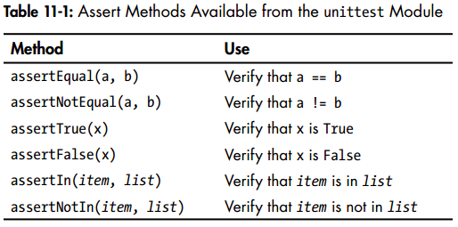
A Class to Test
much of your work involves testing the behavior of the methods in the class. But there are a few differences
Consider a class that helps administer anonymous surveys (survery.py):
class AnonymousSurvey(): """Collect anonymous answers to a survey question.""" def __init__(self, question): """Store a question, and prepare to store response.""" self.question = question self.responses = [] def show_question(self): """Show the survey question.""" print(self.question) def store_response(self, new_response): """Store a single response to the survey""" self.responses.append(new_response) def show_results(self): """Show all the responses that have been given""" print("Survey results:") for response in self.responses: print("=" + response)
let’s write a program that uses the class (language_survey.py):
from survey import AnonymousSurvey # define a question, and make a survey question = "What language did you first learn to speak?" my_survey = AnonymousSurvey(question) # show the question, and store response to the question my_survey.show_question() print("Enter 'q' at any time to quit.\n") while True: response = input("Language: ") if response == 'q': break my_survey.store_response(response) # show the survey results print("\nThank you to everyone who participated in the survey!") my_survey.show_results()
Testing the AnonymousSurvey Class
Let’s write a test that verifies one aspect of the way AnonymousSurvey behaves. We’ll write a test to verify that a single response to the survey question is stored properly. We’ll use the assertIn() method to verify that the response is in the list of responses after it’s been stored (test_survey.py):
import unittest from survey import AnonymousSurvey class TestAnonymousSurvey(unittest.TestCase): """Tests for the class AnonymousSurvey""" def test_store_single_response(self): """Test that a single response is stored properly.""" question = "What language did you first learn to speak?" my_survey = AnonymousSurvey(question) my_survey.store_response("English") self.assertIn("English", my_survey.responses) unittest.main()
- A good descriptive name for this method is test_store_single_response() v. If this test fails, we’ll know from the method name shown in the output of the failing test that there was a problem storing a single response to the survey.
- To test the behavior of a class, we need to make an instance of the class.
This is good, but a survey is useful only if it generates more than one response. Let’s verify that three responses can be stored correctly. To do this, we add another method to TestAnonymousSurvey:
import unittest from survey import AnonymousSurvey class TestAnonymousSurvey(unittest.TestCase): """Tests for the class AnonymousSurvey""" def test_store_single_response(self): """Test that a single response is stored properly.""" question = "What language did you first learn to speak?" my_survey = AnonymousSurvey(question) my_survey.store_response("English") self.assertIn("English", my_survey.responses) def test_store_three_responses(self): """Test that three individual responses are stored properly.""" question = "What language did you first learn to speak?" my_survey = AnonymousSurvey(question) responses = ["English", "Spanish", "Mandarin"] for response in responses: my_survey.store_response(response) for response in responses: self.assertIn(response, my_survey.responses) unittest.main()
This works perfectly. However, these tests are a bit repetitive, so we’ll use another feature of unittest to make them more efficient.
The setUp() Method
In test_survey.py we created a new instance of AnonymousSurvey in each test method, and we created new responses in each method.
The unittest.TestCase class has a setUp() method that allows you to create these objects once and then use them in each of your test methods.
Note: When you include a setUp() method in a TestCase class, Python runs the setUp() method before running each method starting with test_. Any objects created in the setUp() method are then available in each test method you write.
import unittest from survey import AnonymousSurvey class TestAnonymousSurvey(unittest.TestCase): """Tests for the class AnonymousSurvey""" def setUp(self): """ Create a survey and a set of responses for use in all test mothods. """ question = "What language did you first learn to speak?" self.my_survey = AnonymousSurvey(question) self.responses = ["English", "Spanish", "Mandarin"] def test_store_single_response(self): """Test that a single response is stored properly.""" self.my_survey.store_response("English") self.assertIn(self.responses[0], self.my_survey.responses) def test_store_three_responses(self): """Test that three individual responses are stored properly.""" for response in self.responses: self.my_survey.store_response(response) for response in self.responses: self.assertIn(response, self.my_survey.responses) unittest.main()
- This is much easier than making a new set of instances and attributes in each test method.
These tests would be particularly useful when trying to expand AnonymousSurvey to handle multiple responses for each person. After modifying the code to accept multiple responses, you could run these tests and make sure you haven’t affected the ability to store a single response or a series of individual responses.
Tip: When a test case is running, Python prints one character for each unit test as it is completed. A passing test prints a dot, a test that results in an error prints an E, and a test that results in a failed assertion prints an F. This is why you’ll see a different number of dots and characters on the first line of output when you run your test cases. If a test case takes a long time to run because it contains many unit tests, you can watch these results to get a sense of how many tests are passing.
Summary
Testing is an important topic that many beginners don’t learn. You don’t have to write tests for all the simple projects you try as a beginner. But as soon as you start to work on projects that involve significant development effort, you should test the critical behaviors of your functions and classes. You’ll be more confident that new work on your project won’t break the parts that work, and this will give you the freedom to make improvements to your code. If you accidentally break existing functionality, you’ll know right away, so you can still fix the problem easily. Responding to a failed test that you ran is much easier than responding to a bug report from an unhappy user.
Other programmers respect your projects more if you include some initial tests. They’ll feel more comfortable experimenting with your code and be more willing to work with you on projects. If you want to contribute to a project that other programmers are working on, you’ll be expected to show that your code passes existing tests and you’ll usually be expected to write tests for new behavior you introduce to the project.
Play around with tests to become familiar with the process of testing your code. Write tests for the most critical behaviors of your functions and classes, but don’t aim for full coverage in early projects unless you have a specific reason to do so.
Part II: Projects
Creating your own projects will teach you new skills and solidify your understanding of the concepts introduced in Part I.
Part II contains three types of projects, and you can choose to do any or all of these projects in whichever order you like. Here’s a brief description of each project to help you decide which to dig into first.
- alien Invasion: Making a Game with Python: In the Alien Invasion project (Chapters 12, 13, and 14), you’ll use the Pygame package to develop a 2D game. At the end of the project, you’ll have learned skills that will enable you to develop your own 2D games in Pygame.
- Data Visulization: Learning to make visualizations allows you to explore the field of data mining, which is a highly sought-after skill in the world today.
- The Data Visualization project starts in Chapter 15, in which you’ll learn to generate data and create a series of functional and beautiful visualizations of that data using matplotlib and Pygal.
- Chapter 16 teaches you to access data from online sources and feed it into a visualization package to create plots of weather data and a world population map.
- Chapter 17 shows you how to write a program to automatically download and visualize data.
- Web Applications: In the Web Applications project (Chapters 18, 19, and 20), you’ll use the Django package to create a simple web application that allows users to keep a journal about any number of topics they’ve been learning about. Users will create an account with a username and password, enter a topic, and then make entries about what they’re learning. You’ll also learn how to deploy your app so anyone in the world can access it. After completing this project, you’ll be able to start building your own simple web applications, and you’ll be ready to delve into more thorough resources on building applications with Django.
Project 1: Alien Invasion
Project 2: Data Visulization
15. Generating Data
Data visualization involves exploring data through visual representations. It’s closely associated with data mining, which uses code to explore the patterns and connections in a data set. A data set can be just a small list of numbers that fits in one line of code or many gigabytes of data.
Making beautiful representations of data is about more than pretty pictures. When you have a simple, visually appealing representation of a data set, its meaning becomes clear to viewers. People will see patterns and significance in your data sets that they never knew existed.
Fortunately, you don’t need a supercomputer to visualize complex data. With Python’s efficiency, you can quickly explore data sets made of millions of individual data points on just a laptop. The data points don’t have to be numbers, either. With the basics you learned in the first part of this book, you can analyze nonnumerical data as well.
People use Python for data-intensive work in genetics, climate research, political and economic analysis, and much more. Data scientists have written an impressive array of visualization and analysis tools in Python, many of which are available to you as well.
One of the most popular tools is `matplotlib, a mathematical plotting library. We’ll use matplotlib to make simple plots, such as line graphs and scatter plots. After which, we’ll create a more interesting data set based on the concept of a random walk – a visualization generated from a series of random decisions.
We’ll also use a package called Pygal, which focuses on creating visualizations that work well on digital devices. You can use Pygal to emphasize and resize elements as the user interacts with your visualization, and you can easily resize the entire representation to fit on a tiny smartwatch or giant monitor. We’ll use Pygal to explore what happens when you roll dice in various ways.
Installing matplotlib
On Linux
apt-get install python3-matplotlib apt-get install python3.4-dev python3.4-tk tk-development apt-get install libfreetype6-dev g++ pip3 install --user matplotlib
Note: You might need to use pip3 instead of pip when installing packages. Also, if this command doesn’t work, you might need to leave off the --user flag.
[ME: after installation we use jupyter to run python code in a notebook!]
Testing matplotlib
$ python3
>>> import matplotlib
>>>
If you have trouble with your installation, see Appendix C. If all else fails, ask for help. Your issue will most likely be one that an experienced Python programmer can troubleshoot quickly with a little information from you.
The matplotlib Gallery
To see the kinds of visualizations you can make with matplotlib, visit the sample gallery at http://matplotlib.org/. When you click a visualization in the gallery, you can see the code used to generate the plot.
Plotting a simple line graph
mport matplotlib.pyplot as plt squares = [1, 4, 9, 16, 25] plt.plot(squares) plt.show()
- pyplot contains a number of functions that help generate charts and plots.
Changing the Label Type and Graph Thickness
the label type is too small and the line is too thin.
Fortunately, matplotlib allows you to adjust every feature of a visualization.
import matplotlib.pyplot as plt squares = [1, 4, 9, 16, 25] plt.plot(squares, linewidth=5) # set chart title and label axes. plt.title("square numbers", fontsize=24) plt.xlabel("value", fontsize=14) plt.ylabel("square of value", fontsize=14) # set size of tick labels plt.tick_params(axis="both", labelsize=14) plt.show()
Correcting the Plot
Notice at the end of the graph that the square of 4.0 is shown as 25! Let’s fix that.
When you give plot() a sequence of numbers, it assumes the first data point corresponds to an x-coordinate value of 0, but our first point corresponds to an x-value of 1. We can override the default behavior by giving plot() both the input and output values used to calculate the squares:
import matplotlib.pyplot as plt input_values = [1, 2, 3, 4, 5] squares = [1, 4, 9, 16, 25] plt.plot(input_values, squares, linewidth=5) # set chart title and label axes. plt.title("square numbers", fontsize=24) plt.xlabel("value", fontsize=14) plt.ylabel("square of value", fontsize=14) # set size of tick labels plt.tick_params(axis="both", labelsize=14) plt.show()
Now plot() will graph the data correctly because we’ve provided both the input and output values, so it doesn’t have to assume how the output numbers were generated.
You can specify numerous arguments when using plot() and use a number of functions to customize your plots. We’ll continue to explore these customization functions as we work with more interesting data sets throughout this chapter.
Plotting and Styling Individual Points with scatter()
Sometimes it’s useful to be able to plot and style individual points based on certain characteristics. For example,
- you might plot small values in one color and larger values in a different color.
- You could also plot a large data set with one set of styling options and then emphasize individual points by replotting them with different options.
To plot a single point, use the scatter() function. Pass the single (x, y) values of the point of interest to scatter(), and it should plot those values:
import matplotlib.pyplot as plt plt.scatter(2, 4) plt.show()
We’ll add a title, label the axes, and make sure all the text is large enough to read:
import matplotlib.pyplot as plt plt.scatter(2, 4, s=200) # (1) # set chart title and label axes. plt.title("Square Numbers", fontsize=24) plt.xlabel("Value", fontsize=24) plt.ylabel("Square of Value", fontsize=24) # set size of tick labels. plt.tick_params(axis="both", which="major", labelsize=14) plt.show()
- (1): we call scatter() and use the s argument to set the size of the dots used to draw the graph.
- (2): the parameter "which" defaults to "major" (apply arguments to which ticks), refer to matplotlib.pyplot.tick_params.
Plotting a Series of Points with scatter()
To plot a series of points, we can pass scatter() separate lists of x- and y-values, like this:
mport matplotlib.pyplot as plt x_values = [1, 2, 3, 4, 5] y_values = [1, 4, 9, 16, 25] plt.scatter(x_values, y_values, s=100) # set chart title and label axes. plt.title("Square Numbers", fontsize=24) plt.xlabel("Value", fontsize=24) plt.ylabel("Square of Value", fontsize=24) # set size of tick labels. plt.tick_params(axis="both", which="major", labelsize=14) plt.show()
Calculating Data Automatically
Writing out lists by hand can be inefficient, especially when we have many points. Rather than passing our points in a list, let’s use a loop in Python to do the calculations for us. Here’s how this would look with 1000 points:
import matplotlib.pyplot as plt x_values = list(range(1, 1001)) # (1) y_values = [x**2 for x in x_values] # (2) plt.scatter(x_values, y_values, s=10) # set chart title and label axes. plt.title("Square Numbers", fontsize=24) plt.xlabel("Value", fontsize=24) plt.ylabel("Square of Value", fontsize=24) # set size of tick labels. plt.tick_params(axis="both", which="major", labelsize=14) # set the range for each axis plt.axis([0, 1100, 0, 1100000]) # (3) plt.show()
- (1): a list of x-values containing the numbers 1 through 1000
- (2): a list comprehension generates the y-values by looping through the x-values (for x in x_values), squaring each number (x**2), and storing the results in y_values.
- (3): we use the axis() function to specify the range of each axis
Removing Outlines from Data Points
matplotlib lets you color points individually in a scatter plot. The default— blue dots with a black outline—works well for plots with a few points. But when plotting many points, the black outlines can blend together. To remove the outlines around points, pass the argument edgecolor='none' when you call scatter():
plt.scatter(x_values, y_values, edgecolor="none", s=10)
Defining Custom Colors
To change the color of the points, pass c to scatter() with the name of a color to use, as shown here:
plt.scatter(x_values, y_values, c="red", edgecolor="none", s=10)
You can also define custom colors using the RGB color model. To define a color, pass the c argument a tuple with three decimal values (one each for red, green, and blue), using values between 0 and 1. For example, the following line would create a plot with light blue dots:
plt.scatter(x_values, y_values, c=(0, 0, 0.8), edgecolor="none", s=10)
Values closer to 0 produce dark colors, and values closer to 1 produce lighter colors.
Using a Colormap
A colormap is a series of colors in a gradient that moves from a starting to ending color. Colormaps are used in visualizations to emphasize a pattern in the data. For example, you might make low values a light color and high values a darker color.
The pyplot module includes a set of built-in colormaps. To use one of these colormaps, you need to specify how pyplot should assign a color to each point in the data set. Here’s how to assign each point a color based on its y-value:
plt.scatter(x_values, y_values, c=y_values, cmap=plt.cm.Blues, edgecolor="none", s=40)
We pass the list of y-values to c and then tell pyplot which colormap to use through the cmap argument. This code colors the points with lower y-values light blue and the points with larger y-values dark blue.
Tip: You can see all the colormaps available in pyplot at http://matplotlib.org/; go to Examples, scroll down to Color Examples, and click colormaps_reference.
Saving Your Plots Automatically
If you want your program to automatically save the plot to a file, you can replace [ME: otherwise the saved png will be empty.] the call to plt.show() with a call to plt.savefig():
plt.savefig("squares_plot.png", bbox_inches="tight")
- The first argument is a filename for the plot image, which will be saved in the same directory as scatter_squares.py.
- The second argument trims extra whitespace from the plot. If you want the extra whitespace around the plot, you can omit this argument.
Random Walks
In this section we’ll use Python to generate data for a random walk and then use matplotlib to create a visually appealing representation of the generated data.
A random walk is a path that has no clear direction but is determined by a series of random decisions, each of which is left entirely to chance. You might imagine a random walk as the path an ant would take if it had lost its mind and took every step in a random direction.
Random walks have practical applications in nature, physics, biology, chemistry, and economics. For example, a pollen grain floating on a drop of water moves across the surface of the water because it is constantly being pushed around by water molecules. Molecular motion in a water drop is random, so the path a pollen grain traces out on the surface is a random walk. The code we’re about to write models many real-world situations.
Creating the RandomWalk() Class
To create a random walk, we’ll create a RandomWalk class, which will make random decisions about which direction the walk should take. The class needs three attributes: one variable to store the number of points in the walk and two lists to store the x- and y-coordinate values of each point in the walk.
Only two methods for the RandomWalk class: the __init__() method and fill_walk(), which will calculate the points in the walk. Let’s start with __init__() as shown here (random_walk.py):
from random import choice # (1) class RandomWalk(): """A class to generate random walks.""" def __init__(self, num_points=5000): # (2) """Initialize attributes of a walk.""" self.num_points = num_points # All walks start at (0, 0) self.x_values = [0] # (3) self.y_values = [0]
- (1): To make random decisions, we’ll store possible choices in a list and use choice() to decide which choice to use each time a decision is made.
- (2): We then set the default number of points in a walk to 5000—large enough to generate some interesting patterns but small enough to generate walks quickly.
- (3): we make two lists to hold the x- and y-values, and we start each walk at point (0, 0).
Choosing Directions
We’ll use fill_walk(), as shown here, to fill our walk with points and determine the direction of each step. Add this method to random_walk.py:
def fill_walk(self): """Calculate all the points in the walk.""" # Keep taking steps until the walk reaches the desired length. while len(self.x_values) < self.num_points: # (1) # Decide which direction to go and how far to go in that direction x_direction = choice([1, -1]) # (2) x_distance = choice([0, 1, 2, 3, 4]) x_step = x_direction * x_distance # (3) y_direction = choice([1, -1]) y_distance = choice([0, 1, 2, 3, 4]) y_step = y_direction * y_distance # (4) # Reject moves that go nowhere if x_step == 0 and y_step == 0: # (5) continue # Calculate the next x and y values. next_x = self.x_values[-1] + x_step # (6) next_y = self.y_values[-1] + y_step self.x_values.append(next_x) self.y_values.append(next_y)
- we set up a loop that runs until the walk is filled with the correct number of points. The main part of this method tells Python how to simulate four random decisions: Will the walk go right or left? How far will it go in that direction? Will it go up or down? How far will it go in that direction?
- We use choice([1, -1]) to choose a value for x_direction, which returns either 1 for right movement or −1 for left. Next, choice([0, 1, 2, 3, 4]) tells Python how far to move in that direction (x_distance) by randomly selecting an integer between 0 and 4. (The inclusion of a 0 allows us to take steps along the y-axis as well as steps that have movement along both axes.)
- At 3 & 4 we determine the length of each step in the x and y directions by multiplying the direction of movement by the distance chosen.
- If the value of both x_step and y_step are 0, the walk stops, but we continue the loop to prevent this.
Plotting the Random Walk
import matplotlib.pyplot as plt from random_walk import RandomWalk # Make a random walk, and plot the points rw = RandomWalk() rw.fill_walk() plt.scatter(rw.x_values, rw.y_values, c=range(0, len(rw.x_values)), cmap=plt.cm.Blues, s=5) plt.show()
Figure 15-8: A random walk with 5000 points
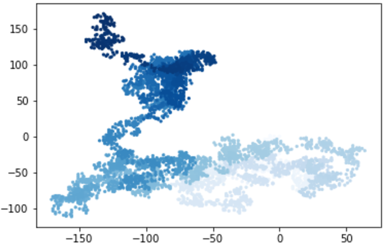
- [ME: 随着步数增加颜色逐渐加深]
Generating Multiple Random Walks
import matplotlib.pyplot as plt from random_walk import RandomWalk # Keep making new walks, as long as the program is active while True: # Make a random walk, and plot the points rw = RandomWalk() rw.fill_walk() plt.scatter(rw.x_values, rw.y_values, c=range(0, len(rw.x_values)), cmap=plt.cm.Blues, s=5) plt.show() keep_running = input("Make another walk? (y/n): ") if keep_running == "n": break
This code will generate a random walk, display it in matplotlib’s viewer, and pause with the viewer open. When you close the viewer, you’ll be asked whether you want to generate another walk. Answer y, and you should be able to generate walks that stay near the starting point, that wander off mostly in one direction, that have thin sections connecting larger groups of points, and so on. When you want to end the program, enter n.
Figure:
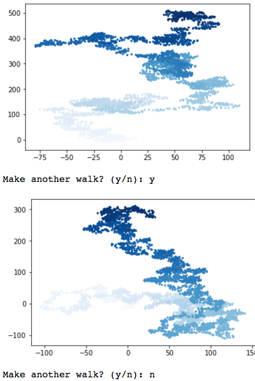
Note: If you’re using Python 2.7, remember to use raw_input() instead of input(). [ME: otherwise you have to enter "n" instead of n.]
Styling the Walk
we’ll customize our plots to emphasize the important characteristics of each walk and deemphasize distracting elements.
we identify the characteristics we want to emphasize, such as where the walk began, where it ended, and the path taken. Next, we identify the characteristics to deemphasize, like tick marks and labels. The result should be a simple visual representation that clearly communicates the path taken in each random walk.
Coloring the Points
We’ll use a colormap to show the order of the points in the walk and then remove the black outline from each dot so the color of the dots will be clearer.
import matplotlib.pyplot as plt from random_walk import RandomWalk # Keep making new walks, as long as the program is active while True: # Make a random walk, and plot the points rw = RandomWalk() rw.fill_walk() point_numbers = list(range(rw.num_points)) # 1 plt.scatter(rw.x_values, rw.y_values, c=point_numbers, cmap=plt.cm.Blues, edgecolor="none", s=15) plt.show() keep_running = input("Make another walk? (y/n): ") if keep_running == "n": break
- we use range() to generate a list of numbers equal to the number of points in the walk.
Plotting the Starting and Ending Points
In addition to coloring points to show their position along the walk, it would be nice to see where each walk begins and ends. To do so, we can plot the first and last points individually once the main series has been plotted. We’ll make the end points larger and color them differently to make them stand out, as shown here:
import matplotlib.pyplot as plt from random_walk import RandomWalk # Keep making new walks, as long as the program is active while True: # Make a random walk, and plot the points rw = RandomWalk() rw.fill_walk() point_numbers = list(range(rw.num_points)) plt.scatter(rw.x_values, rw.y_values, c=point_numbers, cmap=plt.cm.Blues, edgecolor="none", s=15) # Emphasize the first and last points plt.scatter(0, 0, c="green", edgecolors="none", s=100) plt.scatter(rw.x_values[-1], rw.y_values[-1], c="red", edgecolors="none", s=100) plt.show() keep_running = input("Make another walk? (y/n): ") if keep_running == "n": break
Cleaning Up the Axes
Let’s remove the axes in this plot so they don’t distract us from the path of each walk.
import matplotlib.pyplot as plt from random_walk import RandomWalk # Keep making new walks, as long as the program is active while True: # Make a random walk, and plot the points rw = RandomWalk() rw.fill_walk() point_numbers = list(range(rw.num_points)) plt.scatter(rw.x_values, rw.y_values, c=point_numbers, cmap=plt.cm.Blues, edgecolor="none", s=15) # Emphasize the first and last points plt.scatter(0, 0, c="green", edgecolors="none", s=100) plt.scatter(rw.x_values[-1], rw.y_values[-1], c="red", edgecolors="none", s=100) # Remove the axes. plt.axes().get_xaxis().set_visible(False) # <--- plt.axes().get_yaxis().set_visible(False) plt.show() keep_running = input("Make another walk? (y/n): ") if keep_running == "n": break
Adding Plot Points
Let’s increase the number of points to give us more data to work with. To do so, we increase the value of num_points when we make a RandomWalk instance and adjust the size of each dot when drawing the plot, as shown here:
import matplotlib.pyplot as plt from random_walk import RandomWalk # Keep making new walks, as long as the program is active while True: # Make a random walk, and plot the points rw = RandomWalk(50000) # <--- rw.fill_walk() point_numbers = list(range(rw.num_points)) plt.scatter(rw.x_values, rw.y_values, c=point_numbers, cmap=plt.cm.Blues, edgecolor="none", s=1) # <--- # Emphasize the first and last points plt.scatter(0, 0, c="green", edgecolors="none", s=100) plt.scatter(rw.x_values[-1], rw.y_values[-1], c="red", edgecolors="none", s=100) # Remove the axes. plt.axes().get_xaxis().set_visible(False) plt.axes().get_yaxis().set_visible(False) plt.show() keep_running = input("Make another walk? (y/n): ") if keep_running == "n": break
Altering the Size to Fill the Screen
A visualization is much more effective at communicating patterns in data if it fits nicely on the screen. To make the plotting window better fit your screen, adjust the size of matplotlib’s output, like this:
import matplotlib.pyplot as plt from random_walk import RandomWalk # Keep making new walks, as long as the program is active while True: # Make a random walk, and plot the points rw = RandomWalk(50000) rw.fill_walk() # Set the size of the plotting window. plt.figure(figsize=(10, 6)) # <--- point_numbers = list(range(rw.num_points)) plt.scatter(rw.x_values, rw.y_values, c=point_numbers, cmap=plt.cm.Blues, edgecolor="none", s=1) # Emphasize the first and last points plt.scatter(0, 0, c="green", edgecolors="none", s=100) plt.scatter(rw.x_values[-1], rw.y_values[-1], c="red", edgecolors="none", s=100) # Remove the axes. plt.axes().get_xaxis().set_visible(False) plt.axes().get_yaxis().set_visible(False) plt.show() keep_running = input("Make another walk? (y/n): ") if keep_running == "n": break
The figure() function controls the width, height, resolution, and background color of the plot. The figsize parameter takes a tuple, which tells matplotlib the dimensions of the plotting window in inches.
Python assumes that your screen resolution is 80 pixels per inch; if this code doesn’t give you an accurate plot size, adjust the numbers as necessary. Or, if you know your system’s resolution, pass figure() the resolution using the dpi parameter to set a plot size that makes effective use of the space available on your screen, as shown here:
plt.figure(dpi=128, figsize=(10, 6))
Figure 15-10: A walk with 50,000 points (filling the screen)
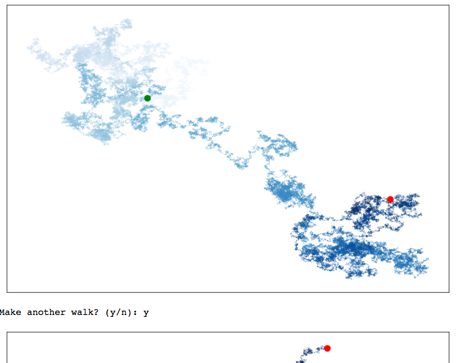
Rolling Dice with Pygal
In this section we’ll use the Python visualization package Pygal to produce scalable vector graphics files. These are useful in visualizations that are presented on differently sized screens because they scale automatically to fit the viewer’s screen. -> If you plan to use your visualizations online, consider using Pygal so your work will look good on any device people use to view your visualizations.
In this project we’ll analyze the results of rolling dice. If you roll one regular six-sided die, you have an equal chance of rolling any of the numbers from 1 through 6. However, when using two dice, you’re more likely to roll certain numbers rather than others. We’ll try to determine which numbers are most likely to occur by generating a data set that represents rolling dice. Then we’ll plot the results of a large number of rolls to determine which results are more likely than others.
The study of rolling dice is often used in mathematics to explain various types of data analysis. But it also has real-world applications in casinos and other gambling scenarios, as well as in the way games like Monopoly and many role-playing games are played.
Installing Pygal
Install Pygal with pip.
On Linux and OS X, this should be something like:
pip3 install --user pygal
The Pygal Gallery
To see what kind of visualizations are possible with Pygal, visit the gallery of chart types: go to http://www.pygal.org/, click Documentation, and then click Chart types. Each example includes source code, so you can see how the visualizations are generated.
Creating the Die Class
die.py:
from random import randint class Die(): """A class representing a single die.""" def __init__(self, num_sides=6): """Assume a six-sided die.""" self.num_sides = num_sides def roll(self): """Return a random value between 1 and number of sides.""" return randint(1, self.num_sides)
Tip: Dice are named for their number of sides: a six-sided die is a D6, an eight-sided die is a D8, and so on.
- The roll() method uses the randint() function to return a random number between 1 and the number of sides. This function can return the starting value (1), the ending value (num_sides), or any integer between the two.
Rolling the Die
Roll a D6:
from die import Die # Create a D6. die = Die() # Make some rolls, and store results in a list results = [] for roll_num in range(100): result = die.roll() results.append(result) print(results)
Analyzing the Results
from die import Die # Create a D6. die = Die() # Make some rolls, and store results in a list results = [] for roll_num in range(1000): result = die.roll() results.append(result) # Analyze the results. frequencies = [] for value in range(1, die.num_sides + 1): frequency = results.count(value) frequencies.append(frequency) print(frequencies)
Output:
[182, 151, 164, 172, 179, 152]
Now let’s visualize these results.
Making a Histogram
A histogram is a bar chart showing how often certain results occur. Here’s the code to create the histogram:
import pygal from die import Die # Create a D6. die = Die() # Make some rolls, and store results in a list results = [] for roll_num in range(1000): result = die.roll() results.append(result) # Analyze the results. frequencies = [] for value in range(1, die.num_sides + 1): frequency = results.count(value) # <--- frequencies.append(frequency) # Visualize the results. hist = pygal.Bar() hist.title = "Results of rolling one D6 1000 times" hist.x_labels = ['1', '2', '3', '4', '5', '6'] hist.x_title = "Result" hist.y_title = "Frequency of Result" hist.add("D6", frequencies) hist.render_to_file("die_visual.svg") # save to file!
Tip: The simplest way to look at the resulting histogram is in a web browser.
Figure 15-11: A simple bar chart created with Pygal
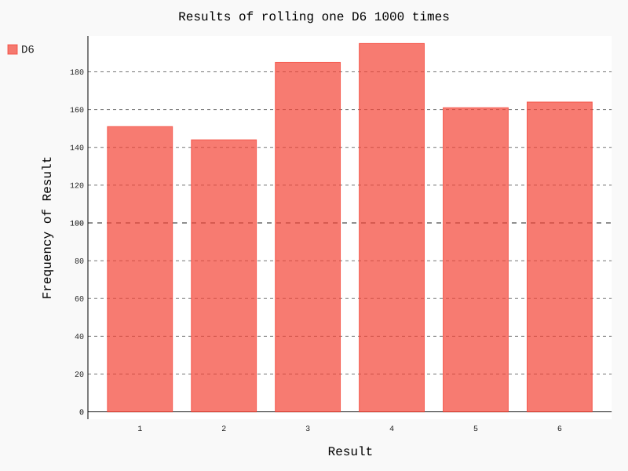
Notice that Pygal has made the chart interactive: hover your cursor over any bar in the chart and you’ll see the data associated with it. This feature is particularly useful when plotting multiple data sets on the same chart.
Rolling Two Dice
Rolling two dice results in larger numbers and a different distribution of results. Let’s modify our code to create two D6 dice to simulate the way we roll a pair of dice. Each time we roll the pair, we’ll add the two numbers (one from each die) and store the sum in results.
mport pygal from die import Die # Create a D6. die1 = Die() die2 = Die() # Make some rolls, and store results in a list results = [] for roll_num in range(1000): result = die1.roll() + die2.roll() results.append(result) # Analyze the results. frequencies = [] max_result = die1.num_sides + die2.num_sides for value in range(2, max_result + 1): frequency = results.count(value) # <--- frequencies.append(frequency) # Visualize the results. hist = pygal.Bar() hist.title = "Results of rolling two D6 dice 1000 times" hist.x_labels = ['2', '3', '4', '5', '6', '7', '8', '9', '10', '11', '12'] hist.x_title = "Result" hist.y_title = "Frequency of Result" hist.add("D6 + D6", frequencies) hist.render_to_file("dice_visual.svg")
Figure 15-12: Simulated results of rolling two six-sided dice 1000 times
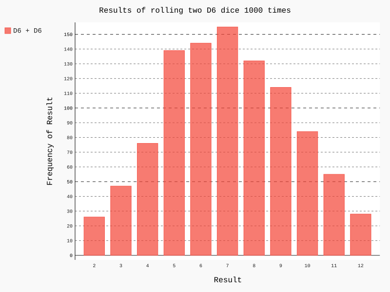
Rolling Dice of Different Sizes
Let’s create a six-sided die and a ten-sided die, and see what happens when we roll them 50,000 times:
import pygal from die import Die # Create a D6 and a D10. die1 = Die() die2 = Die(10) # <--- # Make some rolls, and store results in a list results = [] for roll_num in range(50000): result = die1.roll() + die2.roll() results.append(result) # Analyze the results. frequencies = [] max_result = die1.num_sides + die2.num_sides for value in range(2, max_result + 1): frequency = results.count(value) # <--- frequencies.append(frequency) # Visualize the results. hist = pygal.Bar() hist.title = "Results of rolling two D6 dice 50000 times" hist.x_labels = ['2', '3', '4', '5', '6', '7', '8', '9', '10', '11', '12', '13', '14', '15', '16'] hist.x_title = "Result" hist.y_title = "Frequency of Result" hist.add("D6 + D10", frequencies) hist.render_to_file("d6_d10_visual.svg")
Figure 15-13 shows the resulting chart. Instead of one most likely result, there are five. This happens because there’s still only one way to roll the smallest value (1 and 1) and the largest value (6 and 10), but the smaller die limits the number of ways you can generate the middle numbers: there are six ways to roll a 7, 8, 9, 10, and 11. Therefore, these are the most common results, and you’re equally likely to roll any one of these numbers.
Figure 15-13: The results of rolling a six-sided die and a ten-sided die 50,000 times
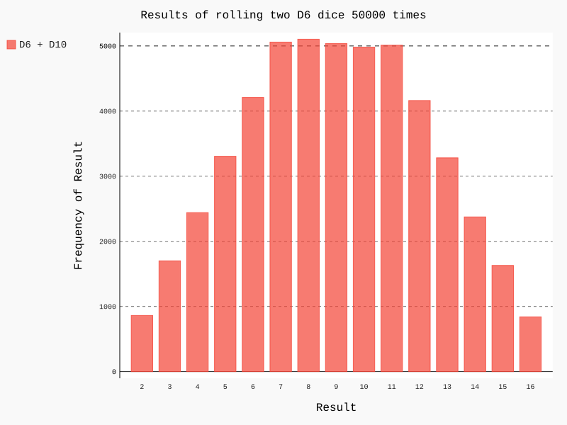
Important: Our ability to use Pygal to model the rolling of dice gives us considerable freedom in exploring this phenomenon. In just minutes you can simulate a tremendous number of rolls using a large variety of dice.
hist.x_labels = [str(i) for i in range(2, max_result + 1)] # or simply hist.x_labels = [i for i in range(2, max_result + 1)]
Summary
Generating your own data sets with code is an interesting and powerful way to model and explore a wide variety of real-world situations. As you continue to work through the data visualization projects that follow, keep an eye out for situations you might be able to model with code. Look at the visualizations you see in news media, and see if you can identify those that were generated using methods similar to the ones you’re learning in these projects.
In Chapter 16 we’ll download data from online sources and continue to use matplotlib and Pygal to explore that data.
16. Downloading Data
In this chapter you’ll download data sets from online sources and create working visualizations of that data. An incredible variety of data can be found online, much of which hasn’t been examined thoroughly. The ability to analyze this data allows you to discover patterns and connections that no one else has found.
We’ll access and visualize data stored in two common data formats, CSV and JSON.
- We’ll use Python’s csv module to process weather data stored in the CSV (comma-separated values) format and analyze high and low temperatures over time in two different locations. We’ll then use matplotlib to generate a chart based on our downloaded data to display variations in temperature in two very different environments: Sitka, Alaska, and Death Valley, California.
- Later in the chapter, we’ll use the json module to access population data stored in the JSON format and use Pygal to draw a population map by country.
By the end of this chapter, you’ll be prepared to work with different types and formats of data sets, and you’ll have a deeper understanding of how to build complex visualizations. The ability to access and visualize online data of different types and formats is essential to working with a wide variety of real-world data sets.
the CsV file format
One simple way to store data in a text file is to write the data as a series of values separated by commas, called comma-separated values (CSV).
CSV files can be tricky for humans to read, but they’re easy for programs to process and extract values from, which speeds up the data analysis process.
We’ll begin with a small set of CSV-formatted weather data recorded in Sitka, which is available in the bookâ��s resources through https://www .nostarch.com/pythoncrashcourse/. Copy the file sitka_weather_07-2014.csv to the folder where you’re writing this chapter’s programs.
Note: The weather data in this project was originally downloaded from http://www.wunderground.com/history/.
Parsing the CSV File Headers
Python’s csv module in the standard library parses the lines in a CSV file and allows us to quickly extract the values we’re interested in.
Let’s start by examining the first line of the file, which contains a series of headers for the data:
import csv filename = 'sitka_weather_07-2014.csv' with open(filename) as f: reader = csv.reader(f) # 1 header_row = next(reader) # 2 print(header_row)
- we call csv.reader() and pass it the file object as an argument to create a reader object associated with that file
- The csv module contains a next() function, which returns the next line in the file when passed the reader object. In the preceding listing we call next() only once so we get the first line of the file, which contains the file headers.
Output:
['AKDT', 'Max TemperatureF', 'Mean TemperatureF', 'Min TemperatureF', 'Max Dew PointF', 'MeanDew PointF', 'Min DewpointF', 'Max Humidity', ' Mean Humidity', ' Min Humidity', ' Max Sea Level PressureIn', ' Mean Sea Level PressureIn', ' Min Sea Level PressureIn', ' Max VisibilityMiles', ' Mean VisibilityMiles', ' Min VisibilityMiles', ' Max Wind SpeedMPH', ' Mean Wind SpeedMPH', ' Max Gust SpeedMPH', 'PrecipitationIn', ' CloudCover', ' Events', ' WindDirDegrees']
- The header AKDT represents Alaska Daylight Time. The position of this header tells us that the first value in each line will be the date or time.
- The Max TemperatureF header tells us that the second value in each line is the maximum temperature for that date, in degrees Fahrenheit.
Printing the Headers and Their Positions
To make it easier to understand the file header data, print each header and its position in the list:
import csv filename = 'sitka_weather_07-2014.csv' with open(filename) as f: reader = csv.reader(f) header_row = next(reader) for index, column_header in enumerate(header_row): # (1) print(index, column_header)
- We use enumerate() on the list to get the index of each item, as well as the value.
Output:
0 AKDT 1 Max TemperatureF 2 Mean TemperatureF 3 Min TemperatureF 4 Max Dew PointF 5 MeanDew PointF 6 Min DewpointF 7 Max Humidity 8 Mean Humidity 9 Min Humidity 10 Max Sea Level PressureIn 11 Mean Sea Level PressureIn 12 Min Sea Level PressureIn 13 Max VisibilityMiles 14 Mean VisibilityMiles 15 Min VisibilityMiles 16 Max Wind SpeedMPH 17 Mean Wind SpeedMPH 18 Max Gust SpeedMPH 19 PrecipitationIn 20 CloudCover 21 Events 22 WindDirDegrees
Note: The headers are not always formatted consistently: spaces and units are in odd places. This is common in raw data files but won’t cause a problem.
Here we see that the dates and their high temperatures are stored in columns 0 and 1. To explore this data, we’ll process each row of data in sitka_weather_07-2014.csv and extract the values with the indices 0 and 1.
Extracting and Reading Data
Now that we know which columns of data we need, let’s read in some of that data. First, we’ll read in the high temperature for each day:
import csv # Get high temperatures from file. filename = 'sitka_weather_07-2014.csv' with open(filename) as f: reader = csv.reader(f) header_row = next(reader) highs = [] for row in reader: # loop through the remaining rows in the file high = int(row[1]) highs.append(high) print(highs)
Output:
[64, 71, 64, 59, 69, 62, 61, 55, 57, 61, 57, 59, 57, 61, 64, 61, 59, 63, 60, 57, 69, 63, 62, 59, 57, 57, 61, 59, 61, 61, 66]
Now let’s create a visualization of this data.
Plotting Data in a Temperature Chart
To visualize the temperature data we have, we’ll first create a simple plot of the daily highs using matplotlib, as shown here:
import csv import matplotlib.pyplot as plt # Get high temperatures from file. filename = 'sitka_weather_07-2014.csv' with open(filename) as f: reader = csv.reader(f) header_row = next(reader) highs = [] for row in reader: high = int(row[1]) highs.append(high) # Plot data. fig = plt.figure(figsize=(10, 6)) plt.plot(highs, c="red") # set chart title and label axes. plt.title("Daily high temperatures, July 2014", fontsize=24) plt.xlabel("", fontsize=16) plt.ylabel("Temperature (F)", fontsize=16) # set size of tick labels. plt.tick_params(axis="both", which="major", labelsize=14) plt.show()
Figure 16-1: A line graph showing daily high temperatures for July 2014 in Sitka, Alaska
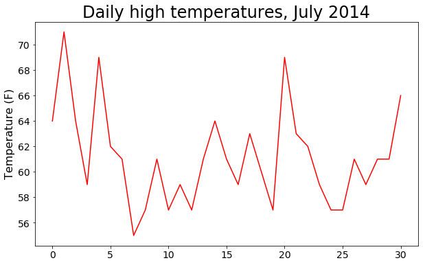
The datetime Module
Let’s add dates to our graph to make it more useful. The first date from the weather data file is in the second row of the file:
2014-7-1,64,56,50,53,51,48,96,83,58,30.19,--snip--
The data will be read in as a string, so we need a way to convert the string '2014-7-1' to an object representing this date. We can construct an object representing July 1, 2014, using the strptime() method from the datetime module. Let’s see how strptime() works in a terminal session:
from datetime import datetime first_date = datetime.strptime("2014-07-01", "%Y-%m-%d") print(first_date)
Output:
2014-07-01 00:00:00
we call the method strptime() with the string containing the date we want to work with as the first argument. The second argument tells Python how the date is formatted. In this example,
- '%Y-' tells Python to interpret the part of the string before the first dash as a four-digit year;
- '%m-' tells Python to interpret the part of the string before the second dash as a number representing the month; and
- '%d' tells Python to interpret the last part of the string as the day of the month, from 1 to 31.
The strptime() method can take a variety of arguments to determine how to interpret the date. Table 16-1 shows some of these arguments.
Table 16-1: Date and Time Formatting Arguments from the datetime Module
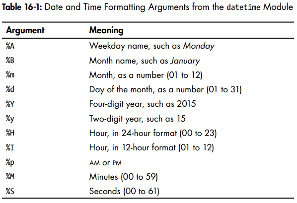
Plotting Dates
we can now improve our plot of the temperature data by extracting dates for the daily highs and passing the dates and the highs to plot():
import csv from datetime import datetime import matplotlib.pyplot as plt # Get dates and high temperatures from file. filename = 'sitka_weather_07-2014.csv' with open(filename) as f: reader = csv.reader(f) header_row = next(reader) dates, highs = [], [] for row in reader: current_date = datetime.strptime(row[0], "%Y-%m-%d") dates.append(current_date) high = int(row[1]) highs.append(high) # Plot data. fig = plt.figure(figsize=(10, 6)) plt.plot(dates, highs, c="red") # Format plot. plt.title("Daily high temperatures, July 2014", fontsize=24) plt.xlabel("", fontsize=16) fig.autofmt_xdate() plt.ylabel("Temperature (F)", fontsize=16) plt.tick_params(axis="both", which="major", labelsize=14) plt.show() #plt.savefig("figure-16-01.png", bbox_inches="tight")
Figure 16-2: The graph is more meaningful now that it has dates on the x-axis.
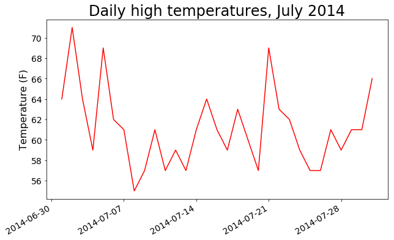
Plotting a Longer Timeframe
With our graph set up, let’s add more data to get a more complete picture of the weather in Sitka (use the file sitka_weather_2014.csv).
Plotting a Second Data Series
We need to extract the low temperatures from the data file and then add them to our graph:
import csv from datetime import datetime import matplotlib.pyplot as plt # Get dates and high temperatures from file. filename = 'sitka_weather_2014.csv' with open(filename) as f: reader = csv.reader(f) header_row = next(reader) dates, highs, lows = [], [], [] for row in reader: current_date = datetime.strptime(row[0], "%Y-%m-%d") dates.append(current_date) high = int(row[1]) highs.append(high) low = int(row[3]) lows.append(low) # Plot data. fig = plt.figure(figsize=(10, 6)) plt.plot(dates, highs, c="red") plt.plot(dates, lows, c="blue") # Format plot. plt.title("Daily high and low temperatures, 2014", fontsize=24) plt.xlabel("", fontsize=16) fig.autofmt_xdate() plt.ylabel("Temperature (F)", fontsize=16) plt.tick_params(axis="both", which="major", labelsize=14) plt.show() #plt.savefig("figure-16-02.png", bbox_inches="tight")
Figure 16-4: Two data series on the same plot
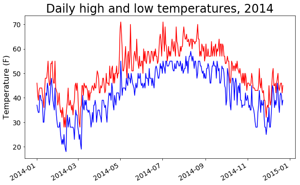
Shading an Area in the Chart
Let’s add a finishing touch to the graph by using shading to show the range between each day’s high and low temperatures. To do so, we’ll use the fill_between() method, which takes a series of x-values and two series of y-values, and fills the space between the two y-value series:
import csv from datetime import datetime import matplotlib.pyplot as plt # Get dates and high temperatures from file. filename = 'sitka_weather_2014.csv' with open(filename) as f: reader = csv.reader(f) header_row = next(reader) dates, highs, lows = [], [], [] for row in reader: current_date = datetime.strptime(row[0], "%Y-%m-%d") dates.append(current_date) high = int(row[1]) highs.append(high) low = int(row[3]) lows.append(low) # Plot data. fig = plt.figure(figsize=(10, 6)) plt.plot(dates, highs, c="red", alpha=0.5) # (1) plt.plot(dates, lows, c="blue", alpha=0.5) plt.fill_between(dates, highs, lows, facecolor="blue", alpha=0.3) # (2) # Format plot. plt.title("Daily high and low temperatures, 2014", fontsize=24) plt.xlabel("", fontsize=16) fig.autofmt_xdate() plt.ylabel("Temperature (F)", fontsize=16) plt.tick_params(axis="both", which="major", labelsize=14) plt.show() #plt.savefig("figure-16-04.png", bbox_inches="tight")
- The alpha argument at u controls a color’s transparency. An alpha value of 0 is completely transparent, and 1 (the default) is completely opaque. The alpha argument at u controls a color’s transparency. An alpha value of 0 is completely transparent, and 1 (the default) is completely opaque.
- we pass fill_between() the list dates for the x-values and then the two y-value series highs and lows. The facecolor argument determines the color of the shaded region, and we give it a low alpha value of 0.1 so the filled region connects the two data series without distracting from the information they represent.
Figure 16-5: The region between the two data sets is shaded.
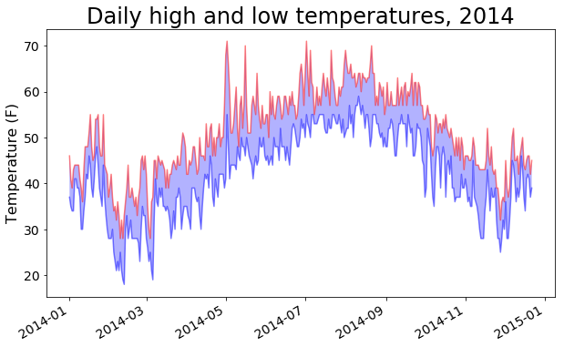
The shading helps make the range between the two data sets immediately apparent.
Error-Checking
some weather stations occasionally malfunction and fail to collect some or all of the data they’re supposed to. Missing data can result in exceptions that crash our programs if we don’t handle them properly.
some weather stations occasionally malfunction and fail to collect some or all of the data they’re supposed to. Missing data can result in exceptions that crash our programs if we don’t handle them properly.
filename = 'death_valley_2014.csv'
Output:
---------------------------------------------------------------------------
ValueError Traceback (most recent call last)
<ipython-input-64-a8f161bdd35b> in <module>()
16 dates.append(current_date)
17
---> 18 high = int(row[1])
19 highs.append(high)
20
ValueError: invalid literal for int() with base 10: ''
Reason: A look through death_valley_2014.csv shows the problem:
2014-2-16,,,,,,,,,,,,,,,,,,,0.00,,,-1
the string for the high temperature is empty. To address this issue, we’ll run errorchecking code when the values are being read from the CSV file to handle exceptions that might arise when we parse our data sets. Here’s how that works:
import csv from datetime import datetime import matplotlib.pyplot as plt # Get dates and high temperatures from file. #filename = 'sitka_weather_2014.csv' filename = 'death_valley_2014.csv' with open(filename) as f: reader = csv.reader(f) header_row = next(reader) dates, highs, lows, diffs = [], [], [], [] for row in reader: try: current_date = datetime.strptime(row[0], "%Y-%m-%d") high = int(row[1]) low = int(row[3]) except ValueError: print(current_date, ": missing data") else: dates.append(current_date) highs.append(high) lows.append(low) diff = high - low diffs.append(diff) # Plot data. fig = plt.figure(figsize=(10, 6)) plt.plot(dates, highs, c="red", alpha=0.5) # (1) plt.plot(dates, lows, c="blue", alpha=0.5) plt.fill_between(dates, highs, lows, facecolor="blue", alpha=0.1) # (2) plt.plot(dates, diffs, c="green", alpha=0.5) # Format plot. plt.title("Daily high and low temperatures, 2014", fontsize=24) plt.xlabel("", fontsize=16) fig.autofmt_xdate() plt.ylabel("Temperature (F)", fontsize=16) plt.tick_params(axis="both", which="major", labelsize=14) plt.show()
Comparing this graph to the Sitka graph, we can see that Death Valley is warmer overall than southeast Alaska, as might be expected, but also that the range of temperatures each day is actually greater in the desert. The height of the shaded region makes this clear.
Many data sets you work with will have missing data, improperly formatted data, or incorrect data. Use the tools you learned in the first half of this book to deal with these situations. Here we used a try-except-else block to handle missing data. Sometimes you’ll use continue to skip over some data or use remove() or del to eliminate some data after it’s been extracted. You can use any approach that works, as long as the result is a meaningful, accurate visualization.
mapping global data sets: json format
In this section, you’ll download location-based country data in the JSON format and work with it using the json module. Using Pygal’s beginnerfriendly mapping tool for country-based data, you’ll create visualizations of this data that explore global patterns concerning the world’s population distribution over different countries.
Downloading World Population Data
Copy the file population_data.json, which contains population data from 1960 through 2010 for most of the world’s countries, to the folder where you’re storing this chapter’s programs. This data comes from one of the many data sets that the Open Knowledge Foundation (http://data.okfn.org/) makes freely available.
Extracting Relevant Data
[
{
"Country Name": "Arab World",
"Country Code": "ARB",
"Year": "1960",
"Value": "96388069"
},
{
"Country Name": "Arab World",
"Country Code": "ARB",
"Year": "1961",
"Value": "98882541.4"
},
--snip--
]
The file is basically one long Python list. Each item is a dictionary with four keys.
We want to examine each country’s name and population only in 2010, so start by writing a program to print just that information:
import json # Load the data into a list filename = 'population_data.json' with open(filename) as f: pop_data = json.load(f) # Print the 2010 population for each country for pop_dict in pop_data: if pop_dict['Year'] == '2010': country_name = pop_dict['Country Name'] country_code = pop_dict['Country Code'] population = pop_dict['Value'] print(country_name + '(' + country_code + '): ' + population)
Not all of the data we captured includes exact country names, but this is a good start. Now we need to convert the data into a format Pygal can work with.
Converting Strings into Numerical Values
Every key and value in population_data.json is stored as a string. To work with the population data, we need to convert the population strings to numerical values. We do this using the int() function:
import json # Load the data into a list filename = 'population_data.json' with open(filename) as f: pop_data = json.load(f) # Print the 2010 population for each country for pop_dict in pop_data: if pop_dict['Year'] == '2010': country_name = pop_dict['Country Name'] country_code = pop_dict['Country Code'] population = int(pop_dict['Value']) print(country_name + '[' + country_code + ']: ' + str(population))
Output:
Arab World: 357868000 Caribbean small states: 6880000 East Asia & Pacific (all income levels): 2201536674 --snip-- Traceback (most recent call last): File "print_populations.py", line 12, in <module> population = int(pop_dict['Value']) <1> ValueError: invalid literal for int() with base 10: '1127437398.85751'
- It’s often the case that raw data isn’t formatted consistently, so we come across errors a lot. Here the error occurs because Python can’t directly turn a string that contains a decimal, '1127437398.85751', into an integer u. (This decimal value is probably the result of interpolation for years when a specific population count was not made.)
We address this error by converting the string to a float and then converting that float to an integer:
import json # Load the data into a list filename = 'population_data.json' with open(filename) as f: pop_data = json.load(f) # Print the 2010 population for each country for pop_dict in pop_data: if pop_dict['Year'] == '2010': country_name = pop_dict['Country Name'] country_code = pop_dict['Country Code'] population = int(float(pop_dict['Value'])) # <--- print(country_name + '[' + country_code + ']: ' + str(population))
Now that these population values are stored in a numerical format, we can use them to make a world population map.
Obtaining Two-Digit Country Codes
Before we can focus on mapping, we need to address one last aspect of the data. The mapping tool in Pygal expects data in a particular format: countries need to be provided as country codes and populations as values. Several standardized sets of country codes are frequently used when working with geopolitical data; the codes included in population_data.json are three-letter codes, but Pygal uses two-letter codes. We need a way to find the two-digit code from the country name.
Pygal’s country codes are stored in a module called i18n. The dictionary COUNTRIES contains the two-letter country codes as keys and the country names as values. To see these codes, import the dictionary from the i18n module and print its keys and values:
from pygal_maps_world.i18n import COUNTRIES for country_code in sorted(COUNTRIES.keys()): print(country_code, COUNTRIES[country_code])
To extract the country code data, we write a function that searches through COUNTRIES and returns the country code. We’ll write this in a separate module called country_codes so we can later import it into a visualization program:
from pygal_maps_world.i18n import COUNTRIES def get_country_code(country_name): """Return the pygal 2-digit country code for the given country.""" for code, name in COUNTRIES.items(): if name == country_name: return code # If the country wasnt found, return None. return None
Run this program, and you’ll see some country codes with their populations and some error lines:
Error - South Asia Error - Sub-Saharan Africa (all income levels) Error - Sub-Saharan Africa (developing only) Error - Upper middle income Error - World
The errors come from two sources. First, not all the classifications in the data set are by country; some population statistics are for regions (Arab World) and economic groups (all income levels). Second, some of the statistics use a different system for full names of countries (Yemen, Rep. instead of Yemen). For now, we’ll omit country data that cause errors and see what our map looks like for the data that we recovered successfully.
(Refer to Can't import COUNTRIES from pygal.i18n)
Install pybal plugin pygal_maps_world: pip install pygal_maps_world:
from pygal_maps_world.i18n import COUNTRIES
What's left of the i18n modules can be imported with:
from pygal_maps_world import i18n
Building a World Map
With the country codes we have, it’s quick and simple to make a world map. Pygal includes a Worldmap chart type to help map global data sets.
As an example of how to use Worldmap, we’ll create a simple map that highlights North America, Central America, and South America:
from pygal_maps_world.maps import World wm = World() wm.title = 'North, Central, and South America' wm.add('North America', ['ca', 'mx', 'us']) wm.add('Central America', ['bz', 'cr', 'gt', 'hn', 'ni', 'pa', 'sv']) wm.add('South America', ['ar', 'bo', 'br', 'cl', 'co', 'ec', 'gf', 'gy', 'pe', 'py', 'sr', 'uy', 've']) wm.render_to_file('americas.svg')
[ME: use pip3 list and pip3 show <module_name> to find the installation, then take a look at the source code!]
Figure 16-7: A simple instance of the Worldmap chart type
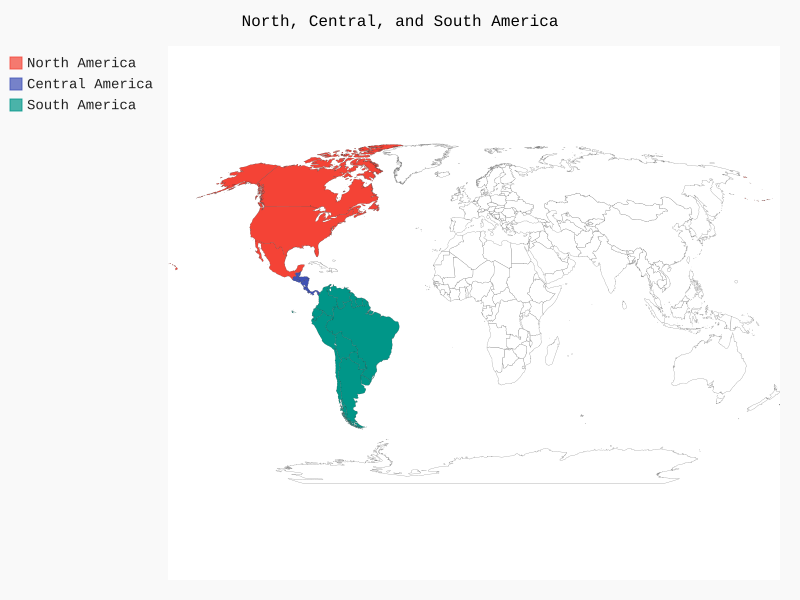
Let’s add data to our map to show information about a country.
Plotting Numerical Data on a World Map
To practice plotting numerical data on a map, create a map showing the populations of the three countries in North America:
from pygal_maps_world.maps import World wm = World() wm.title = 'Populations o Countries in North America' wm.add('North America', {'ca': 34126000, 'mx': 113423000, 'us': 309349000}) wm.render_to_file('na_populations.svg')
this time pass a dictionary as the second argument instead of a list u. The dictionary has Pygal two-letter country codes as its keys and population numbers as its values. Pygal automatically uses these numbers to shade the countries from light (least populated) to dark (most populated).
Figure 16-8: Population sizes of countries in North America
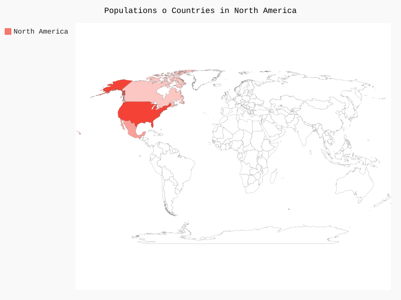
Plotting a Complete Population Map
To plot population numbers for the rest of the countries, we have to convert the country data we processed earlier into the dictionary format Pygal expects, which is two-letter country codes as keys and population numbers as values.
import json from country_codes import get_country_code from pygal_maps_world.maps import World # Load the data into a list filename = 'population_data.json' with open(filename) as f: pop_data = json.load(f) # Build a dictionary of population data. cc_populations = {} for pop_dict in pop_data: if pop_dict['Year'] == '2010': country_name = pop_dict['Country Name'] country_code = pop_dict['Country Code'] population = int(float(pop_dict['Value'])) code = get_country_code(country_name) if code: cc_populations[code] = population wm = World() wm.title = 'World Population in 2010, by Country' wm.add('2010', cc_populations) wm.render_to_file('world_population.svg')
Figure 16-9: The world’s population in 2010
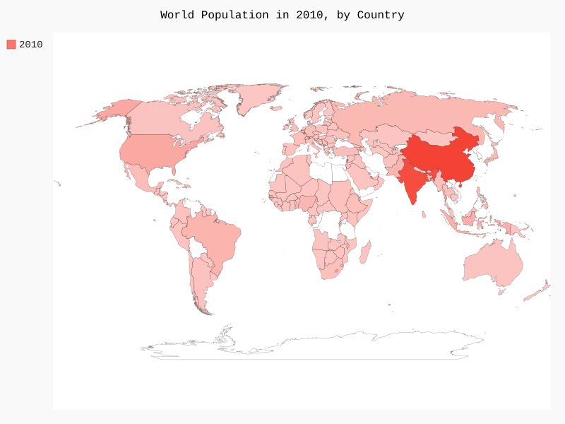
We don’t have data for a few countries, which are colored in black, but most countries are colored according to their population size. You’ll deal with the missing data later in this chapter, but first we’ll alter the shading to more accurately reflect the population of the countries.
Currently, our map shows many lightly shaded countries and two darkly shaded countries. The contrast between most of the countries isn’t enough to indicate how populated they are relative to each other. We’ll fix this by grouping countries into population levels and shading each group.
Grouping Countries by Population
Because China and India are more heavily populated than other countries, the map shows little contrast. China and India are each home to over a billion people, whereas the next most populous country is the United States with approximately 300 million people. Instead of plotting all countries as one group, let’s separate the countries into three population levels: less than 10 million, between 10 million and 1 billion, and more than 1 billion:
import json from country_codes import get_country_code from pygal_maps_world.maps import World # Load the data into a list filename = 'population_data.json' with open(filename) as f: pop_data = json.load(f) # Build a dictionary of population data. cc_populations = {} for pop_dict in pop_data: if pop_dict['Year'] == '2010': country_name = pop_dict['Country Name'] country_code = pop_dict['Country Code'] population = int(float(pop_dict['Value'])) code = get_country_code(country_name) if code: cc_populations[code] = population # Group the countries into 3 population levels. cc_pops_1, cc_pops_2, cc_pops_3 = {}, {}, {} for cc, pop in cc_populations.items(): if pop < 10000000: cc_pops_1[cc] = pop elif pop < 1000000000: cc_pops_2[cc] = pop else: cc_pops_3[cc] = pop # See how many countries are in each level. print(len(cc_pops_1), len(cc_pops_2), len(cc_pops_3)) wm = World() wm.title = 'World Population in 2010, by Country' wm.add('0-10m', cc_pops_1) wm.add('10m-1bn', cc_pops_2) wm.add('>1bn', cc_pops_3) wm.render_to_file('world_population.svg')
Figure 16-10: The world’s population shown in three different groups
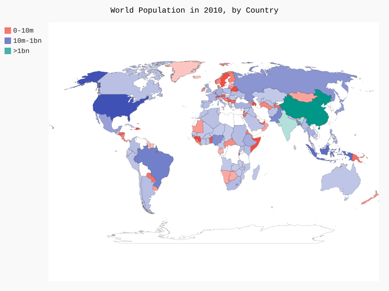
Now three different colors help us see the distinctions between population levels. Within each of the three levels, countries are shaded from light to dark for smallest to largest population.
Styling World Maps in Pygal
Although the population groups in our map are effective, the default color settings are pretty ugly: for example, here Pygal has chosen a garish pink and green motif. We’ll use Pygal’s styling directives to rectify the colors.
Let’s direct Pygal to use one base color again, but this time we’ll choose the color and apply more distinct shading for the three population groups:
import json from country_codes import get_country_code from pygal_maps_world.maps import World from pygal.style import RotateStyle # Load the data into a list filename = 'population_data.json' with open(filename) as f: pop_data = json.load(f) # Build a dictionary of population data. cc_populations = {} for pop_dict in pop_data: if pop_dict['Year'] == '2010': country_name = pop_dict['Country Name'] country_code = pop_dict['Country Code'] population = int(float(pop_dict['Value'])) code = get_country_code(country_name) if code: cc_populations[code] = population # Group the countries into 3 population levels. cc_pops_1, cc_pops_2, cc_pops_3 = {}, {}, {} for cc, pop in cc_populations.items(): if pop < 10000000: cc_pops_1[cc] = pop elif pop < 1000000000: cc_pops_2[cc] = pop else: cc_pops_3[cc] = pop # See how many countries are in each level. print(len(cc_pops_1), len(cc_pops_2), len(cc_pops_3)) wm_style = RotateStyle('#336699') # (1) wm = World(style=wm_style) # (2) wm.title = 'World Population in 2010, by Country' wm.add('0-10m', cc_pops_1) wm.add('10m-1bn', cc_pops_2) wm.add('', cc_pops_3) wm.render_to_file('world_population.svg')
[ME: pygal module index]
- This class takes one argument, an RGB color in hex format. Pygal then chooses colors for each of the groups based on the color provided. The hex format is a string with a hash mark (#) followed by six characters: the first two represent the red component of the color, the next two represent the green component, and the last two represent the blue component. The component values can range from 00 (none of that color) to FF (maximum amount of that color). If you search online for hex color chooser, you should find a tool that will let you experiment with colors and give you the RGB values. The color used here (#336699) mixes a bit of red (33), a little more green (66), and even more blue (99) to give RotateStyle a light blue base color to work from.
- RotateStyle returns a style object, which we store in wm_style. To use this style object, pass it as a keyword argument when you make an instance of Worldmap.
Figure 16-11: The three population groups in a unified color theme
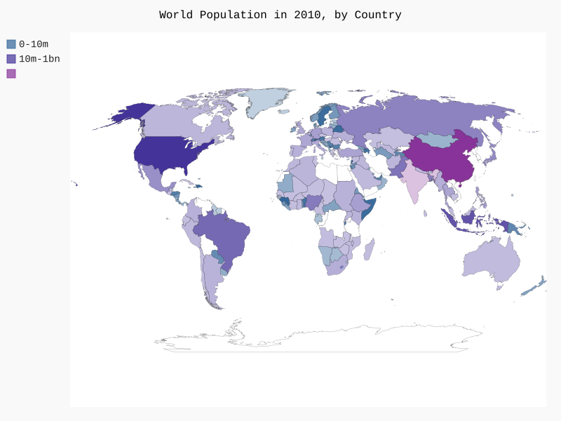
Lightening the Color Theme
Pygal tends to use dark themes by default. For the purposes of printing, I’ve lightened the style of my charts using LightColorizedStyle. This class changes the overall theme of the chart, including the background and labels as well as the individual country colors. To use it, first import the style:
import json from country_codes import get_country_code from pygal_maps_world.maps import World from pygal.style import RotateStyle as RS, LightColorizedStyle as LCS # <--- # Load the data into a list filename = 'population_data.json' with open(filename) as f: pop_data = json.load(f) # Build a dictionary of population data. cc_populations = {} for pop_dict in pop_data: if pop_dict['Year'] == '2010': country_name = pop_dict['Country Name'] country_code = pop_dict['Country Code'] population = int(float(pop_dict['Value'])) code = get_country_code(country_name) if code: cc_populations[code] = population # Group the countries into 3 population levels. cc_pops_1, cc_pops_2, cc_pops_3 = {}, {}, {} for cc, pop in cc_populations.items(): if pop < 10000000: cc_pops_1[cc] = pop elif pop < 1000000000: cc_pops_2[cc] = pop else: cc_pops_3[cc] = pop # See how many countries are in each level. print(len(cc_pops_1), len(cc_pops_2), len(cc_pops_3)) wm_style = RS('#336699', base_style=LCS) # <--- wm = World(style=wm_style) wm.title = 'World Population in 2010, by Country' wm.add('0-10m', cc_pops_1) wm.add('10m-1bn', cc_pops_2) wm.add('', cc_pops_3) wm.render_to_file('world_population_light.svg')
Using just this small set of styling directives gives you significant control over the appearance of charts and maps in Pygal.
Resources:
- The Open Knowledge Foundation maintains a data set containing the gross domestic product (GDP) for each country in the world, which you can find at http://data.okfn.org/data/core/gdp/
- The World Bank maintains many data sets that are broken down for information on each country worldwide Go to http://data.worldbank.org/indicator/ and find a data set that looks interesting Click the data set, click the Download Data link, and choose CSV You’ll receive three CSV files, two of which are labeled Metadata; use the third CSV file
Summary
In the next chapter, you’ll write programs that automatically gather their own data from online sources, and then you’ll create visualizations of that data. These are fun skills to have if you want to program as a hobby and critical skills if you’re interested in programming professionally.
17. Working with APIs
In this chapter you’ll learn how to write a self-contained program to generate a visualization based on data that it retrieves. Your program will use a web application programming interface (API) to automatically request specific information from a website rather than entire pages. It will then use that information to generate a visualization. Because programs written like this will always use current data to generate a visualization, even when that data might be rapidly changing, it will always be up to date.
using a web aPI
A web API is a part of a website designed to interact with programs that use very specific URLs to request certain information. This kind of request is called an API call. The requested data will be returned in an easily processed format, such as JSON or CSV. Most apps that rely on external data sources, such as apps that integrate with social media sites, rely on API calls.
Git and GitHub
We’ll base our visualization on information from GitHub, a site that allows programmers to collaborate on projects. We’ll use GitHub’s API to request information about Python projects on the site and then generate an interactive visualization of the relative popularity of these projects in Pygal.
To learn more about version control using Git, see Appendix D.
Projects on GitHub are stored in repositories, which contain everything associated with the project: its code, information on its collaborators, any issues or bug reports, and so on.
When users on GitHub like a project, they can “star” it to show their support and keep track of projects they might want to use. In this chapter we’ll write a program to automatically download information about the most-starred Python projects on GitHub, and then we’ll create an informative visualization of these projects.
Requesting Data Using an API Call
GitHub’s API lets you request a wide range of information through API calls. To see what an API call looks like, enter the following into your browser’s address bar and press enter:
https://api.github.com/search/repositories?q=language:python&sort=stars
This call returns the number of Python projects currently hosted on GitHub, as well as information about the most popular Python repositories.
Let’s examine the call.
- The first part, https://api.github.com/, directs the request to the part of GitHub’s website that responds to API calls.
- The next part, search/repositories, tells the API to conduct a search through all repositories on GitHub.
- The question mark after repositories signals that we’re about to pass an argument.
- The q stands for query, and the equal sign lets us begin specifying a query (q=).
- By using language:python, we indicate that we want information only on repositories that have Python as the primary language.
- The final part, &sort=stars, sorts the projects by the number of stars they’ve been given.
The following snippet shows the first few lines of the response. You can see from the response that this URL is not intended to be entered by humans.
"total_count": 1501882, "incomplete_results": false, "items": [ { "id": 21289110, "name": "awesome-python", "full_name": "vinta/awesome-python", "owner": { "login": "vinta", --snip--
Because the value for "incomplete_results" is false, we know that the request was successful (it’s not incomplete). If GitHub had been unable to fully process the API request, it would have returned true here. The "items" returned are displayed in the list that follows, which contains details about the most popular Python projects on GitHub.
Installing Requests
The requests package allows a Python program to easily request information from a website and examine the response that’s returned. To install requests, issue a command like the following:
pip3 install --user requests
Processing an API Response
Now we’ll begin to write a program to issue an API call and process the results by identifying the most starred Python projects on GitHub:
import requests # Make an API call and store the response. url = 'https://api.github.com/search/repositories?q=language:python&sort=stars' r = requests.get(url) print("Status code: ", r.status_code) # Store API response in a variable response_dict = r.json() # Process results. print(response_dict.keys())
- we print the value of status_code to make sure the call went through successfully.
- The API returns the information in JSON format, so we use the json() method to convert the information to a Python dictionary.
Output:
Status code: 200 dict_keys(['items', 'incomplete_results', 'total_count'])
Note: Simple calls like this should return a complete set of results, so it’s pretty safe to ignore the value associated with 'incomplete_results'. But when you’re making more complex API calls, your program should check this value.
Working with the Response Dictionary
Let’s generate some output that summarizes the information. This is a good way to make sure we received the information we expected and to start examining the information we’re interested in:
import requests # Make an API call and store the response. url = 'https://api.github.com/search/repositories?q=language:python&sort=stars' r = requests.get(url) print("Status code: ", r.status_code) # Store API response in a variable response_dict = r.json() print('Total repositories: ', response_dict['total_count']) # Process results. repo_dicts = response_dict['items'] print('Respositories returned: ', len(repo_dicts)) # Examine the first repository repo_dict = repo_dicts[0] print('\nKeys: ', len(repo_dict)) for key in sorted(repo_dict.keys()): print(key)
Output:
Status code: 200 Total repositories: 1501920 Respositories returned: 30 Keys: 69 archive_url assignees_url blobs_url branches_url clone_url collaborators_url comments_url commits_url compare_url contents_url contributors_url created_at default_branch deployments_url description downloads_url events_url fork forks forks_count forks_url full_name git_commits_url git_refs_url git_tags_url git_url has_downloads has_issues has_pages has_wiki homepage hooks_url html_url id issue_comment_url issue_events_url issues_url keys_url labels_url language languages_url merges_url milestones_url mirror_url name notifications_url open_issues open_issues_count owner private pulls_url pushed_at releases_url score size ssh_url stargazers_count stargazers_url statuses_url subscribers_url subscription_url svn_url tags_url teams_url trees_url updated_at url watchers watchers_count
GitHub’s API returns a lot of information about each repository: there are 68 keys in repo_dict. -> The only way to know what information is available through an API is to read the documentation or to examine the information through code, as we’re doing here.
Let’s pull out the values for some of the keys in repo_dict:
import requests # Make an API call and store the response. url = 'https://api.github.com/search/repositories?q=language:python&sort=stars' r = requests.get(url) print("Status code: ", r.status_code) # Store API response in a variable response_dict = r.json() print('Total repositories: ', response_dict['total_count']) # Process results. repo_dicts = response_dict['items'] print('Respositories returned: ', len(repo_dicts)) # Examine the first repository repo_dict = repo_dicts[0] print('\nSelected information about first repository:') print('Name: \t\t', repo_dict['name']) print('Owner: \t\t', repo_dict['owner']['login']) print('Stars: \t\t', repo_dict['stargazers_count']) print('Repository: \t', repo_dict['html_url']) print('Created: \t', repo_dict['created_at']) print('Updated: \t', repo_dict['updated_at']) print('Description: \t', repo_dict['description'])
Output:
Status code: 200 Total repositories: 1501928 Respositories returned: 30 Selected information about first repository: Name: awesome-python Owner: vinta Stars: 29505 Repository: https://github.com/vinta/awesome-python Created: 2014-06-27T21:00:06Z Updated: 2017-02-16T02:53:47Z Description: A curated list of awesome Python frameworks, libraries, software and resources
Important: awesome-python contains many useful resources about python, e.g. algorithms (e.g. sorting).
Summarizing the Top Repositories
When we make a visualization for this data, we’ll want to include more than one repository. Let’s write a loop to print selected information about each of the repositories returned by the API call so we can include them all in the visualization:
import requests # Make an API call and store the response. url = 'https://api.github.com/search/repositories?q=language:python&sort=stars' r = requests.get(url) print("Status code: ", r.status_code) # Store API response in a variable response_dict = r.json() print('Total repositories: ', response_dict['total_count']) # Process results. repo_dicts = response_dict['items'] print('Respositories returned: ', len(repo_dicts)) # Examine the first repository print('\nSelected information about repositories:') for repo_dict in repo_dicts: print('=' * 60) print('Name: \t\t', repo_dict['name']) print('Owner: \t\t', repo_dict['owner']['login']) print('Stars: \t\t', repo_dict['stargazers_count']) print('Repository: \t', repo_dict['html_url']) print('Created: \t', repo_dict['created_at']) print('Updated: \t', repo_dict['updated_at']) print('Description: \t', repo_dict['description'])
Output:
Status code: 200 Total repositories: 1501931 Respositories returned: 30 Selected information about repositories: ============================================================ Name: awesome-python Owner: vinta Stars: 29506 Repository: https://github.com/vinta/awesome-python Created: 2014-06-27T21:00:06Z Updated: 2017-02-16T03:09:03Z Description: A curated list of awesome Python frameworks, libraries, software and resources ============================================================ Name: httpie Owner: jkbrzt Stars: 28131 Repository: https://github.com/jkbrzt/httpie Created: 2012-02-25T12:39:13Z Updated: 2017-02-16T03:07:40Z Description: Modern command line HTTP client – user-friendly curl alternative with intuitive UI, JSON support, syntax highlighting, wget-like downloads, extensions, etc. Follow https://twitter.com/clihttp for tips and updates. ============================================================ Name: flask Owner: pallets Stars: 25241 Repository: https://github.com/pallets/flask Created: 2010-04-06T11:11:59Z Updated: 2017-02-16T02:24:36Z Description: A microframework based on Werkzeug, Jinja2 and good intentions ============================================================ Name: thefuck Owner: nvbn Stars: 24094 Repository: https://github.com/nvbn/thefuck Created: 2015-04-08T15:08:04Z Updated: 2017-02-16T01:59:49Z Description: Magnificent app which corrects your previous console command. ============================================================ Name: django --snip--
Some interesting projects appear in these results, and it might be worth taking a look at a few. But don’t spend too long on it.
Monitoring API Rate Limits
Most APIs are rate-limited, which means there’s a limit to how many requests you can make in a certain amount of time. To see if you’re approaching GitHub’s limits, enter https://api.github.com/rate_limit into a web browser. You should see a response like this:
{
"resources": {
"core": {
"limit": 60,
"remaining": 60,
"reset": 1487221137
},
"search": { // (1)
"limit": 10, // (2)
"remaining": 10, // (3)
"reset": 1487217597 // (4)
}
},
"rate": {
"limit": 60,
"remaining": 60,
"reset": 1487221137
}
}
- The information we’re interested in is the rate limit for the search API.
- the limit is 10 requests per minute and that
- we have 10 requests remaining for the current minute.
- The reset value represents the time in Unix or epoch time (the number of seconds since midnight on January 1, 1970) when our quota will reset.
If you reach your quota, you’ll get a short response that lets you know you’ve reached the API limit. If you reach the limit, just wait until your quota resets.
Note: Many APIs require you to register and obtain an API key in order to make API calls. As of this writing GitHub has no such requirement, but if you obtain an API key, your limits will be much higher.
Visualizing repositories using Pygal
Now that we have some interesting data, let’s make a visualization showing the relative popularity of Python projects on GitHub.
We’ll make an interactive bar chart: the height of each bar will represent the number of stars the project has acquired. Clicking a bar will take you to that project’s home on GitHub. Here’s an initial attempt:
import requests import pygal from pygal.style import LightColorizedStyle as LCS, LightenStyle as LS # Make an API call and store the response. url = 'https://api.github.com/search/repositories?q=language:python&sort=stars' r = requests.get(url) print("Status code: ", r.status_code) # Store API response in a variable response_dict = r.json() print('Total repositories: ', response_dict['total_count']) # Explore information about the repositories. repo_dicts = response_dict['items'] print('Respositories returned: ', len(repo_dicts)) names, stars = [], [] for repo_dict in repo_dicts: names.append(repo_dict['name']) stars.append(repo_dict['stargazers_count']) # Make visualization my_style = LS('#333366', base_style=LCS) chart = pygal.Bar(style=my_style, x_label_rotation=45, show_legend=False) chart.title = 'Most-Starred Python Projects on Github' chart.x_labels = names chart.add('', stars) chart.render_to_file('python_repos.svg')
- we set the rotation of the labels along the x-axis to 45 degrees (x_label_rotation=45)
- we hide the legend, because we’re plotting only one series on the chart (show_legend=False)
Figure 17-1: The most-starred Python projects on GitHub
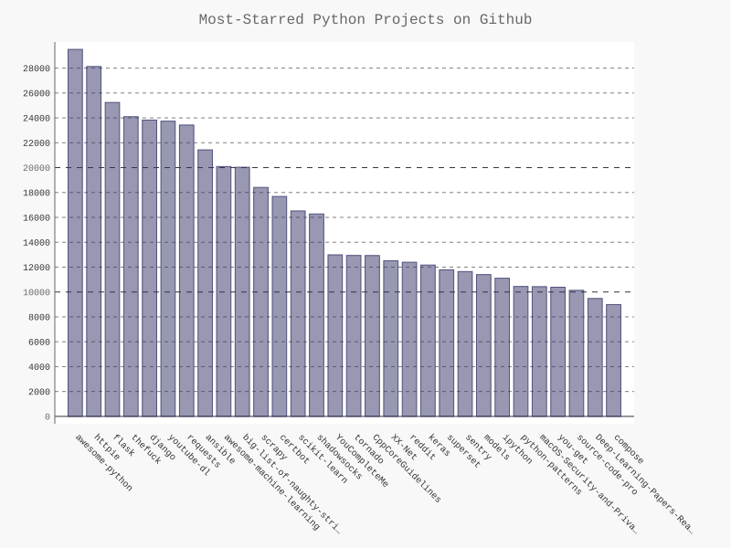
Refining Pygal Charts
Let’s refine the styling of our chart. We’ll be making a few different customizations, so first restructure the code slightly by creating a configuration object that contains all of our customizations to pass to Bar():
import requests import pygal from pygal.style import LightColorizedStyle as LCS, LightenStyle as LS # Make an API call and store the response. url = 'https://api.github.com/search/repositories?q=language:python&sort=stars' r = requests.get(url) print("Status code: ", r.status_code) # Store API response in a variable response_dict = r.json() print('Total repositories: ', response_dict['total_count']) # Explore information about the repositories. repo_dicts = response_dict['items'] print('Respositories returned: ', len(repo_dicts)) names, stars = [], [] for repo_dict in repo_dicts: names.append(repo_dict['name']) stars.append(repo_dict['stargazers_count']) # Make visualization my_style = LS('#333366', base_style=LCS) my_config = pygal.Config() # <--- my_config.x_label_rotation = 45 my_config.show_legend = False my_config.title_font_size = 24 my_config.label_font_size = 14 my_config.major_label_font_size = 18 my_config.truncate_label = 15 my_config.show_y_guides = False my_config.width = 1000 chart = pygal.Bar(my_config, style=my_style) # <--- chart.title = 'Most-Starred Python Projects on Github' chart.x_labels = names chart.add('', stars) chart.render_to_file('python_repos.svg')
- The minor labels in this chart are the project names along the x-axis and most of the numbers along the y-axis. The major labels are just the labels on the y-axis that mark off increments of 5000 stars. These labels will be larger, which is why we differentiate between the two.
- we use truncate_label to shorten the longer project names to 15 characters. (When you hover over a truncated project name on your screen, the full name will pop up.)
- we hide the horizontal lines on the graph by setting show_y_guides to False
- we set a custom width so the chart will use more of the available space in the browser.
We can make as many style and configuration changes as we want through my_config.
Figure 17-2: The styling for the chart has been refined.
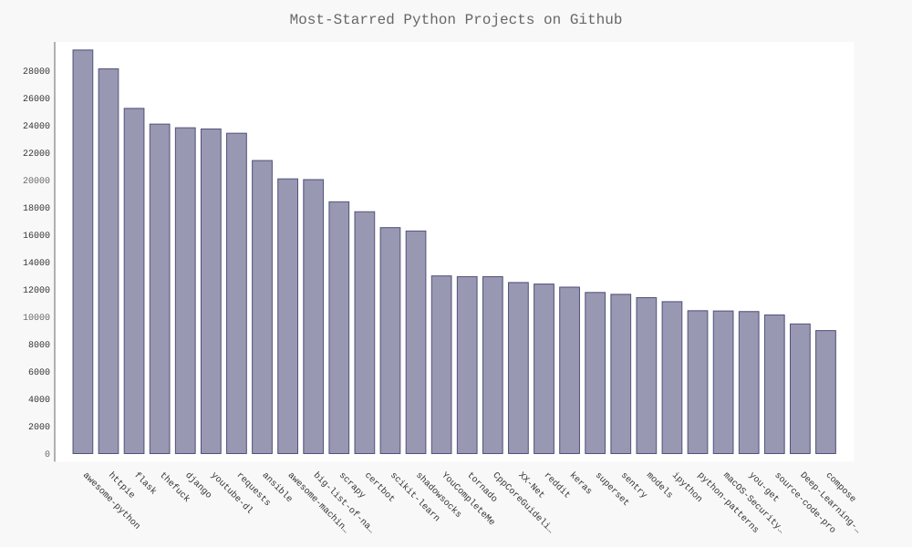
Adding Custom Tooltips
In Pygal, hovering the cursor over an individual bar shows the information that the bar represents. This is commonly called a tooltip, and in this case it currently shows the number of stars a project has.
Let’s create a custom tooltip to show each project’s description as well. Let’s look at a short example using the first three projects plotted individually with custom labels passed for each bar. To do this, we’ll pass a list of dictionaries to add() instead of a list of values:
import requests import pygal from pygal.style import LightColorizedStyle as LCS, LightenStyle as LS my_style = LS('#333366', base_style=LCS) my_config = pygal.Config() my_config.x_label_rotation = 45 my_config.show_legend = False my_config.title_font_size = 24 my_config.label_font_size = 14 my_config.major_label_font_size = 18 my_config.truncate_label = 15 my_config.show_y_guides = False my_config.width = 1000 chart = pygal.Bar(my_config, style=my_style) chart.title = 'Python Projects' chart.x_labels = ['httpie', 'django', 'flask'] plot_dicts = [ {'value': 16101, 'label': 'Description of httpie'}, {'value': 15028, 'label': 'Description of django'}, {'value': 14798, 'label': 'Description of flask'}, ] chart.add('', plot_dicts) chart.render_to_file('bar_descriptions.svg')
Pygal uses the number associated with 'value' to figure out how tall each bar should be, and it uses the string associated with 'label' to create the tooltip for each bar.
Plotting the Data
import requests import pygal from pygal.style import LightColorizedStyle as LCS, LightenStyle as LS # Make an API call and store the response. url = 'https://api.github.com/search/repositories?q=language:python&sort=stars' r = requests.get(url) print("Status code: ", r.status_code) # Store API response in a variable response_dict = r.json() print('Total repositories: ', response_dict['total_count']) # Explore information about the repositories. repo_dicts = response_dict['items'] print('Respositories returned: ', len(repo_dicts)) names, plot_dicts, stars = [], [], [] for repo_dict in repo_dicts: names.append(repo_dict['name']) stars.append(repo_dict['stargazers_count']) if repo_dict['description'] == None: # (1) label = '' print(repo_dict['description']) else: label = repo_dict['description'] plot_dict = { 'value': repo_dict['stargazers_count'], 'label': label, } plot_dicts.append(plot_dict) # Make visualization my_style = LS('#333366', base_style=LCS) my_config = pygal.Config() my_config.x_label_rotation = 45 my_config.show_legend = False my_config.title_font_size = 24 my_config.label_font_size = 14 my_config.major_label_font_size = 18 my_config.truncate_label = 15 my_config.show_y_guides = False my_config.width = 1000 chart = pygal.Bar(my_config, style=my_style) chart.title = 'Most-Starred Python Projects on Github' chart.x_labels = names chart.add('', plot_dicts) chart.render_to_file('python_repos.svg')
- [ME: necessarily, otherwise the error "AttributeError: 'NoneType' object has no attribute 'decode'" will occur]
Adding Clickable Links to Our Graph
Pygal also allows you to use each bar in the chart as a link to a website. To add this capability, we just add one line to our code, leveraging the dictionary we’ve set up for each project. We add a new key-value pair to each project’s plot_dict using the key 'xlink':
plot_dict = { 'value': repo_dict['stargazers_count'], 'label': label, 'xlink': repo_dict['html_url'] }
Pygal uses the URL associated with 'xlink' to turn each bar into an active link. You can click any of the bars in the chart, and the GitHub page for that project will automatically open in a new tab in your browser. Now you have an interactive, informative visualization of data retrieved through an API!
the hacker news aPI
To explore how you would use API calls on other sites, we’ll look at Hacker News (http://news.ycombinator.com/). On Hacker News people share articles about programming and technology, and engage in lively discussions about those articles. Hacker News’ API provides access to data about all submissions and comments on the site, which is available without having to register for a key.
The following call returns information about the current top article as of this writing:
https://hacker-news.firebaseio.com/v0/item/9884165.json
Output:
{"by":"nns","descendants":297,"id":9884165,"kids":[9885099,9884723,9885165,9884789,9885604,9884137,9886151,9885220,9885790,9884661,9885844,9885029,9884817,9887342,9884545,9884372,9884499,9884881,9884109,9886496,9884342,9887832,9885023,9884334,9884707,9887008,9885348,9885131,9887539,9885880,9884196,9884640,9886534,9885152],"score":558,"time":1436875181,"title":"New Horizons: Nasa spacecraft speeds past Pluto","type":"story","url":"http://www.bbc.co.uk/news/science-environment-33524589"}
- The key 'descendants' contains the number of comments an article has received.
- The key 'kids' provides the IDs of all comments made directly in response to this submission.
- Each of these comments may have kids of their own as well, so the number of descendants a submission has can be greater than its number of kids.
Let’s make an API call that returns the IDs of the current top articles on Hacker News, and then examine each of the top articles:
import requests from operator import itemgetter # Make an API call and store the response. url = 'https://hacker-news.firebaseio.com/v0/topstories.json' r = requests.get(url) print('Status code: ', r.status_code) # Process information about each submission. submission_ids = r.json() submission_dicts = [] for submission_id in submission_ids[:30]: # Make a separate API call for each submission. url = ('https://hacker-news.firebaseio.com/v0/item/' + str(submission_id) + '.json') submission_r = requests.get(url) print(submission_r.status_code) response_dict = submission_r.json() submission_dict = { 'title': response_dict['title'], 'link': 'http://news.ycombinator.com/item?id=' + str(submission_id), 'comments': response_dict.get('descendants', 0), } submission_dicts.append(submission_dict) submission_dicts = sorted(submission_dicts, key=itemgetter('comments'), reverse=True) for submission_dict in submission_dicts: print('\nTitle: ', submission_dict['title']) print('\nDescription link: ', submission_dict['link']) print('\nComments: ', submission_dict['comments'])
- We want to sort the list of dictionaries by the number of comments. To do this, we use a function called itemgetter() {, which comes from the operator module. We pass this function the key 'comments', and it pulls the value associated with that key from each dictionary in the list.
- The sorted() function then uses this value as its basis for sorting the list. We sort the list in reverse order to place the most-commented stories first.
Tip: Modify the API call in python_repos.py so it generates a chart showing the most popular projects in other languages Try languages such as JavaScript, Ruby, C, Java, Perl, Haskell, and Go.
Tip: In python_repos.py, we printed the value of status_code to make sure the API call was successful Write a program called test_python_repos.py, which uses unittest to assert that the value of status_code is 200 Figure out some other assertions you can make—for example, that the number of items returned is expected and that the total number of repositories is greater than a certain amount.
Summary
Project 3: Web Application
18. Getting Started with Django
Python has a great set of tools for building web applications. In this chapter you’ll learn how to use Django (http://djangoproject.com/) to build a project called Learning Log—an online journal system that lets you keep track of information you’ve learned about particular topics.
We’ll write a specification for this project, and then we’ll define models for the data the app will work with. We’ll use Django’s admin system to enter some initial data and then learn to write views and templates so Django can build the pages of our site.
Django is a web framework set of tools designed to help you build interactive websites. Django can respond to page requests and make it easier to read and write to a database, manage users, and much more. In Chapters 19 and 20 we’ll refine the Learning Log project and then deploy it to a live server so you (and your friends) can use it.
setting up a Project
When beginning a project, you first need to describe the project in a specification, or spec. Then you’ll set up a virtual environment to build the project in.
Writing a Spec
A full spec
- details the project goals,
- describes the project’s functionality, and
- discusses its appearance and user interface.
We won’t write a full project spec here, but we’ll lay out a few clear goals to keep our development process focused. Here’s the spec we’ll use:
We’ll write a web app called Learning Log that allows users to log the topics they’re interested in and to make journal entries as they learn about each topic. The Learning Log home page should describe the site and invite users to either register or log in. Once logged in, a user should be able to create new topics, add new entries, and read and edit existing entries.
Creating a Virtual Environment
To work with Django, we’ll first set up a virtual environment to work in.
A virtual environment is a place on your system where you can install packages and isolate them from all other Python packages. Separating one project’s libraries from other projects is beneficial and will be necessary when we deploy Learning Log to a server in Chapter 20.
- Create a new directory for your project called learning_log,
- switch to that directory in a terminal, and
- create a virtual environment.
If you’re using Python 3, you should be able to create a virtual environment with the following command:
learning_log$ python3 -m venv ll_env learning_log$
Here we’re running the venv module and using it to create a virtual environment named ll_env. If this works, move on to “Activating the Virtual Environment” on page 399. If it doesn’t work, read the next section, “Installing virtualenv.”
[ME: the above command failed, error message as followed]
The virtual environment was not created successfully because ensurepip is not
available. On Debian/Ubuntu systems, you need to install the python3-venv
package using the following command.
apt-get install python3-venv
You may need to use sudo with that command. After installing the python3-venv
package, recreate your virtual environment.
[ME: should be apt-get install python3.4-venv, refer to Error:_E Unable to locate package python3-venv]
Activating the Virtual Environment
Now that we have a virtual environment set up, we need to activate it with the following command:
source ll_env/bin/activate
This command runs the script activate in ll_env/bin. When the environment is active, you’ll see the name of the environment in parentheses. then you can install packages to the environment and use packages that have already been installed. Packages you install in ll_env will be available only while the environment is active.
To stop using a virtual environment, enter deactivate:
deactivate
The environment will also become inactive if you close the terminal it’s running in.
Installing Django
Once you’ve created your virtual environment and activated it, install Django:
pip install Django
[ME: refer to use mirror for pip]
Because we’re working in a virtual environment, this command is the same on all systems. There’s no need to use the –user flag, and there’s no need to use longer commands like python -m pip install package_name. Keep in mind that Django will be available only when the environment is active.
Creating a Project in Django
Without leaving the active virtual environment (remember to look for ll_env in parentheses), enter the following commands to create a new project:
django-admin.py startproject learning_log .
Output:
(ll_env) [root@linux] /fengyz/projects/python_work/learning_log on master! ⌚ 18:50:01 $ ls learning_log ll_env manage.py (ll_env) [root@linux] /fengyz/projects/python_work/learning_log on master! ⌚ 18:50:01 $ ls learning_log __init__.py settings.py urls.py wsgi.py (ll_env)
- The command at u tells Django to set up a new project called learning_log.
- The dot at the end of the command creates the new project with a directory structure that will make it easy to deploy the app to a server when we’re finished developing it.
Note: Don’t forget this dot, or you may run into some configuration issues when we deploy the app. If you forget the dot, delete the files and folders that were created (except ll_env), and run the command again.
- Django has created a new directory called learning_log.
- It also created a file called manage.py, which is a short program that takes in commands and feeds them to the relevant part of Django to run them. We’ll use these commands to manage tasks like working with databases and running servers.
- The learning_log directory contains four files, the most important of which are settings.py, urls.py, and wsgi.py.
- The settings.py file controls how Django interacts with your system and manages your project. We’ll modify a few of these settings and add some settings of our own as the project evolves.
- The urls.py file tells Django which pages to build in response to browser requests.
- The wsgi.py file helps Django serve the files it creates. The filename is an acronym for web server gateway interface.
Creating the Database
Because Django stores most of the information related to a project in a database, we need to create a database that Django can work with. To create the database for the Learning Log project, enter the following command (still in an active environment):
(ll_env) [root@linux] /fengyz/projects/python_work/learning_log on \356\202\240 master! \342\214\232 19:04:49 $ python3 manage.py migrate Operations to perform: Apply all migrations: admin, auth, contenttypes, sessions Running migrations: Applying contenttypes.0001_initial... OK Applying auth.0001_initial... OK Applying admin.0001_initial... OK Applying admin.0002_logentry_remove_auto_add... OK Applying contenttypes.0002_remove_content_type_name... OK Applying auth.0002_alter_permission_name_max_length... OK Applying auth.0003_alter_user_email_max_length... OK Applying auth.0004_alter_user_username_opts... OK Applying auth.0005_alter_user_last_login_null... OK Applying auth.0006_require_contenttypes_0002... OK Applying auth.0007_alter_validators_add_error_messages... OK Applying auth.0008_alter_user_username_max_length... OK Applying sessions.0001_initial... OK (ll_env) [root@linux] /fengyz/projects/python_work/learning_log on \356\202\240 master! \342\214\232 19:05:03 $ ls db.sqlite3 learning_log ll_env manage.py
- Any time we modify a database, we say we’re migrating the database.
- Issuing the migrate command for the first time tells Django to make sure the database matches the current state of the project.
- The first time we run this command in a new project using SQLite (more about SQLite in a moment), Django will create a new database for us.
- "Operations to perform:": Django reports that it will make the database tables needed to store the information we’ll use in this project (Synchronize unmigrated apps), and then make sure the database structure matches the current code (Apply all migrations).
- Running the ls command shows that Django created another file called db.sqlite3. SQLite is a database that runs off a single file; it’s ideal for writing simple apps because you won’t have to pay much attention to managing the database.
Viewing the Project [ME: not continured!]
Let’s make sure that Django has set up the project properly. Enter the runserver command as follows:
$ python3 manage.py runserver
Performing system checks...
System check identified no issues (0 silenced).
February 13, 2017 - 11:09:37
Django version 1.10.5, using settings 'learning_log.settings'
Starting development server at http://127.0.0.1:8000/
Quit the server with CONTROL-C.